This is a development preview. Nexus is still being built, and parts may change. This guide
covers what works today: hosting guilds, users, joining guilds, encrypted chat in channels, roles,
friends with private messages, the Calendar, Threads and Wiki pages, and voice channels.
What is Nexus?
Nexus is a chat app in the spirit of Discord, but with no company in the middle.
There is no central server and no account to sign up for. Instead:
You are a folder
Your identity is a pair of keys made on your own computer and kept in a user folder,
together with your profile, friends and chats. Nobody can take your name or lock you out.
Guilds are self-hosted
A guild is a community, like a Discord server. Anyone can host one on their own computer
with guild-forge: up to 8 per computer.
Everything is encrypted
Messages are encrypted on your computer, so even the guild's host can't read them. Every
guild proves who it is with its own key, so impostors are detected.
The programs
Program
Who uses it
What it does
The Nexus app
Everyone
The desktop app: create or load your user, join guilds and chat.
GuildForge
People who host guilds
Creates, runs and looks after guilds on a computer: a window on Windows, and the guild-forge commands on Windows and Debian Linux.
Words used in this guide
User
You, in Nexus: a folder holding your keys and profile.
User ID
Your public key, shown as 52 letters and digits. It is your unique name in Nexus.
Guild
A community hosted on someone's computer. On the host's computer, it is also a folder.
Host
The computer (and person) running a guild with guild-forge.
Owner (ADMIN)
The user who manages a guild. The first person to pair with a new guild becomes its owner.
Broadcast
A one-hour window during which a guild without an owner can be paired.
OTP
A one-time password, like K7Q-4MZ-9TB, used to pair. It is valid for 5 minutes.
Channel
A place in a guild where members chat, like #general.
Getting Nexus
Nexus is published on GitHub, at github.com/vibe-atelier/guild-forge under
Releases. Each release has four programs and one notices file, all with the same version
number:
File
What it is
nexus_chat-client_Windows.exe
The Nexus app, for Windows. Everyone needs this one.
GuildForge-Windows_GUI.exe
GuildForge's window, for Windows.
guild-forge_Windows-cmd.exe
The guild-forge commands, for Windows.
guild-forge_Debian
The guild-forge commands, for Debian-based Linux such as LMDE.
Third-Party_Notices.txt
The licences of the software the programs are built with.
Installing the app on Windows
On the release page, click nexus_chat-client_Windows.exe to download it.
Make a folder for it, for example Documents\Nexus App, and move the file there.
It is the whole app: there is nothing else to install.
Right-click it → Show more options → Send to → Desktop (create shortcut),
and open Nexus from that shortcut.
Windows SmartScreen. Programs that are not code-signed may show
"Windows protected your PC". Click More info → Run anyway.
The app only contacts GitHub when you ask. Click the gear at the bottom right of the welcome
screen, or, once signed in, open User Settings and pick Check Updates under APP. Press
Check Updates; if a newer version exists, press Install Update, then Restart Nexus.
Your users, settings and messages stay as they are. The same gear and settings hold Licenses,
the notices of the software Nexus is built with.
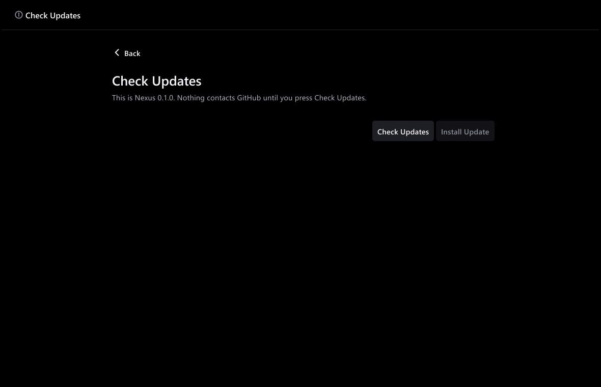
Check Updates, opened from the welcome screen's gear.
The app's window
Nexus draws its own window (with Fyne), so no web browser is involved.
Installing guild-forge on Linux
Open a terminal (the Linux command window) and type these one at a time, pressing Enter
after each. Under each command, every part is explained, along with whether it only looks at your computer
or changes something on it.
1. Download it. Replace 0.1.0 with the newest version shown on GitHub. It is one
long line: type it without pressing Enter until the end.
Runs the command as the computer's administrator. It asks for your password, which stays hidden while you type.
install
Copies a file and sets who may use it. It downloads and sets up nothing else.
-m 755
Everyone may run the program, but only the administrator may change it.
/usr/local/bin/guild-forge
Linux's folder for programs you add yourself, under the name guild-forge, so it is typed just guild-forge.
Changes something: it adds one file, /usr/local/bin/guild-forge.
To remove it again: sudo rm /usr/local/bin/guild-forge.
4. Check it works.
$ guild-forge version
guild-forge 0.1.0
Only reads. It prints the version and stops.
Updating
$ sudo guild-forge update
Checking GitHub for a newer guild-forge...
guild-forge 0.1.0 is up to date.
update
Asks GitHub for the newest release. If it is newer, it downloads it, stops the running guilds, swaps the program and starts them again.
Changes something, only if there is a newer version: it replaces
/usr/local/bin/guild-forge and nothing else. It only contacts GitHub when you type it.
In GuildForge's window on Windows, the gear's Check Updates does the same.
Building the app on Linux
There is no ready-made Linux app in the releases yet, so on Debian-based Linux such as LMDE the app
is built from the Nexus source code folder. These steps were tested on LMDE 7, and list only what that
build needed. Type each command in a terminal, inside the Nexus folder unless it says otherwise.
Installs packages from your system's store, as the administrator. It asks for your password, then lists what it will add and asks Y/n.
gcc
The C compiler. Parts of the app (its window, voice and video) are written in C.
libgl1-mesa-dev
Drawing with the graphics card (Mesa).
xorg-dev
The X.Org window system's libraries, for windows, the mouse and screens.
libxkbcommon-dev
The keyboard library for Wayland desktops.
libwayland-dev
Wayland, the newer window system.
libasound2-dev
Sound (ALSA), for voice channels and notification sounds.
Changes something: it installs these packages and the ones they need.
To see what is already installed first, without changing anything:
dpkg-query -W -f='${Package}: ${Status}\n' gcc libgl1-mesa-dev xorg-dev libxkbcommon-dev libwayland-dev libasound2-dev.
2. Install Go. Download go1.27.4.linux-amd64.tar.gz from go.dev/dl
(Go's official site, whose own instructions these steps follow), then:
$ sha256sum ~/Downloads/go1.27.4.linux-amd64.tar.gz
$ sudo tar -C /usr/local -xzf ~/Downloads/go1.27.4.linux-amd64.tar.gz
$ echo 'export PATH=$PATH:/usr/local/go/bin' >> ~/.profile
$ source ~/.profile
$ go version
sha256sum …
Prints the download's fingerprint, which must match the SHA256 shown on go.dev/dl. Only reads.
sudo tar -C /usr/local -xzf …
Unpacks Go into /usr/local/go: extract a gzipped file, whose name must come right after the f.
echo '…' >> ~/.profile
Adds Go's folder to the places your terminal looks for commands, each time you sign in. Run it once only.
source ~/.profile
Uses that setting straight away, in this terminal.
go version
Prints go version go1.27.4 linux/amd64. Only reads.
Changes something: it adds the folder /usr/local/go and one
line to your ~/.profile.
3. Build the app and put it in the menu. In the Nexus folder:
$ sh build.sh install
Built dist/linux-amd64/nexus-devclient
Built dist/linux-amd64/guild-forge
Built dist/linux-amd64/nexus
Installed Nexus: find it in your desktop's app menu or app list.
sh build.sh
Runs the build script, which turns the source code into the programs in dist/linux-amd64. The first build downloads the Go libraries the app uses and takes a few minutes.
install
Then puts the app in your desktop's menu, for you only: the program in ~/.local/bin, its logo in ~/.local/share/icons and its menu entry in ~/.local/share/applications.
Changes something: it writes the programs into the Nexus folder and,
with install, three files in your home folder. It needs no sudo and changes nothing
outside your home folder. Leave out install to only build.
4. Open it like any other app: find Nexus in your desktop's app menu or app list, or search for
it by name. Most desktops also let you pin it to the panel, dock or desktop from there.
Updating and removing it
The Linux app's Check Updates tells you when a newer version exists. To update, get the newer
source code and run sh build.sh install again: your users, settings and messages stay as
they are. To remove the app from the menu, delete the three files it added:
Changes something:rm deletes those three files. Your users
and messages are kept, in their own folders.
Hosting a guild with GuildForge
GuildForge creates, runs and looks after the guilds on a computer, up to 8. On Windows,
open GuildForge.exe: its window starts on two choices. Create Guild is greyed out
once 8 guilds exist, and Manage Guild until the first one does. The gear at the
bottom right holds Licenses and Check Updates.
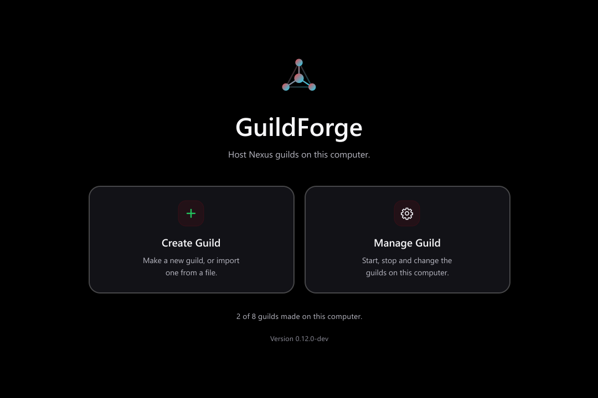
GuildForge's home screen.
Create a guild
Create Guild has two tabs. New Guild asks for a password (it protects the guild's
settings, exports and backups), a port (one is suggested), and optionally a folder for its files.
Import Guild brings in a .nexus file exported from another computer, or a guild
folder.
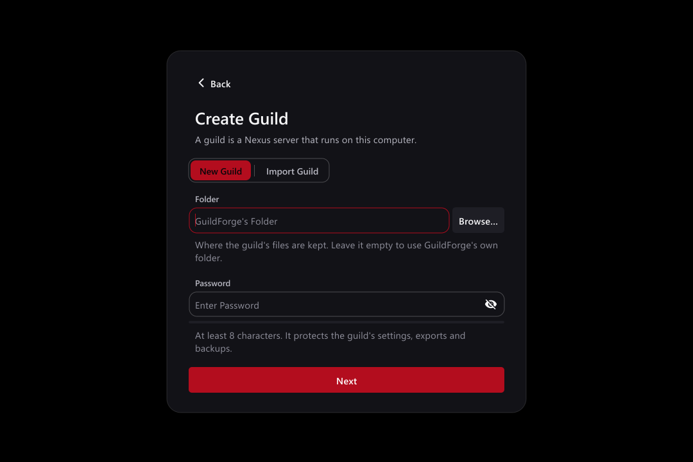
Create Guild, New Guild tab.
Manage a guild
Manage Guild lists the guilds and their state. Pick one for its settings page:
Overview (start or stop it, its addresses and ID), Settings (port, starting automatically,
password), Pairing (broadcast and the one-time password for its first owner),
Backups, Export, and Delete Guild.
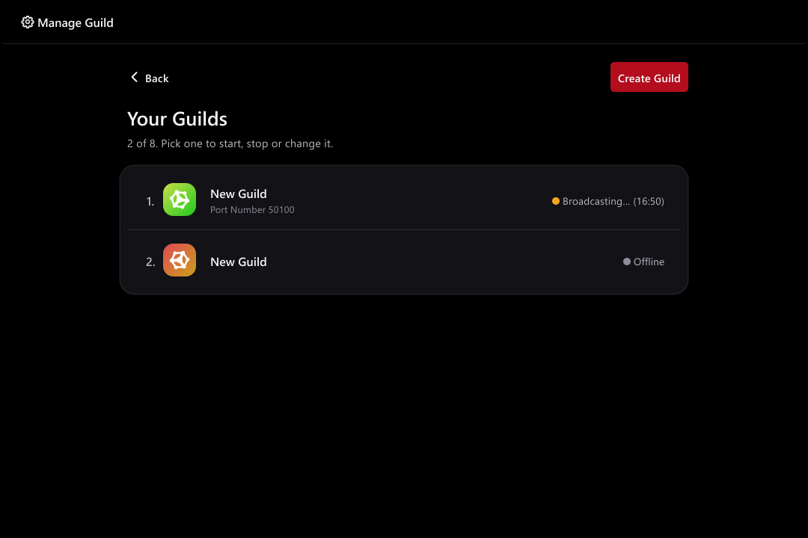
The guilds on this computer.
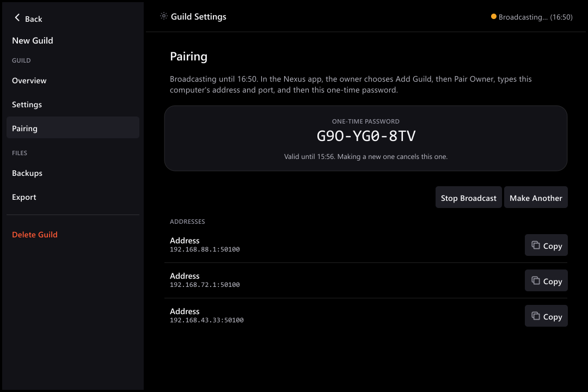
Pairing: the one-time password the owner types in the app.
Terminal Commands
In a terminal, guild-forge does everything the window does, typed the same on Windows
and Debian. On Debian it is the only way: GuildForge has no window there.
Commands look like guild-forge setup=1, where 1 is the guild's number from
guild-forge list. Guilds made by the old nexus-host move over by themselves the first
time GuildForge runs.
On Linux, put sudo in front of every command, for example
sudo guild-forge list. Guilds then run as their own protected system user,
guild-forge, and only that user and administrators can open guild folders.
Reading a command
Every command is built the same way. Take this one:
$ sudo guild-forge setup=1 port=50000
$
The terminal's prompt, showing it is ready. Don't type it.
sudo
Runs what follows as the computer's administrator. It may ask for your password (hidden while typing).
guild-forge
The program.
setup=1
What to do (setup, change settings) and to which guild (1, GUILD#1).
port=50000
Which setting, and its new value.
Typing tips. Linux tells Debian and debian apart, so type
names exactly. In a terminal, paste with Ctrl+Shift+V, not Ctrl+V. Pressing Tab finishes a
file or folder name for you.
Every command at a glance
Only reads commands look and change nothing. Changes commands change guilds or
their files. The password is the guild's own, chosen when it was created.
Command
What it does
Effect
version
Shows guild-forge's version.
Only reads.
list
Shows every guild, its port, owner and state.
Only reads.
setup=1
Shows GUILD#1's settings.
Only reads.
fall-back=1
Lists GUILD#1's backups.
Only reads.
create
Makes a new guild and its folder.
Changes. Asks a new password.
setup=1 …
Changes one of GUILD#1's settings.
Changes. Asks the password.
start=1
Starts GUILD#1 running in the background.
Changes.
stop=1
Stops GUILD#1.
Changes.
OTP
Makes a new one-time password for pairing.
Changes.
backup=1
Saves a backup of GUILD#1.
Changes. Asks the password.
fall-back=1 NAME
Puts GUILD#1 back to a backup.
Changes. Asks the password.
export=1
Packs GUILD#1 into one locked file, for moving it.
Changes. Asks the password.
import="FILE"
Brings in an exported guild.
Changes. Asks the export's password.
reset_owner=1
Removes GUILD#1's owner.
Changes. Asks the password.
delete=1
Removes GUILD#1, asking before each step.
Changes. Asks the password.
update
Installs a newer guild-forge from GitHub.
Changes, only if there is one.
The first time guild-forge runs with sudo on Linux, it also makes what guilds need,
once: the guild-forge system user (who can't sign in), the folder /var/lib/guild-forge,
and a small file telling Linux how to start a guild. version and update never
make these.
Create a guild
$ sudo guild-forge create
Creating GUILD#1.
Choose a password (at least 8 characters, hidden while typing):
Type the password again:
Where should this guild's folder be?
Press Enter for: /var/lib/guild-forge/guilds/guild-V22B745R
or type a folder path (in double quotes if it has spaces):
GUILD#1 created.
Next step: give it a port with guild-forge setup=1 port=50000
The password protects changes to the guild. Press Enter at the folder question to use the
suggested place. A guild is a folder: everything about it is kept inside it.
Changes something: it makes the guild's folder and adds the guild to
guild-forge's list. The guild doesn't run until it is started.
Settings: one command each
$ sudo guild-forge setup=1 port=50000
Password for GUILD#1:
Port set. This guild is now GUILD#1@50000.
$ sudo guild-forge setup=1
GUILD#1@50000 [stopped]
Port: 50000
Start on boot: off
Port forwarding: on (the router is asked)
There are no menus: each change is its own command, and asks for the guild's password first.
Changes something:setup=1 port=50000 saves the new port in
the guild's settings. Only reads:setup=1 on its own just shows them.
Command
What it does
setup=1
Shows the guild's settings and these commands.
setup=1 password
Changes the password.
setup=1 port=50000
Sets the port. A running guild restarts on it.
setup=1 boot=on
Starts the guild whenever the computer starts (on Windows: when you sign in). boot=off stops that.
setup=1 broadcast
Broadcasts for pairing an owner, and shows a one-time password (see Becoming a guild's owner). broadcast=off stops it.
Start, stop and list
$ sudo guild-forge start=1
GUILD#1@50000 is running.
$ sudo guild-forge list
GUILD#1@50000(ADMIN:CBFSCE3CPKVUYZED…) [running, starts on boot]
GUILD#2@50001 [stopped]
list shows each guild's number, port, owner (ADMIN) and state.
Changes something:start=1 starts the guild as a background
service, which Linux restarts if it ever crashes; stop=1 stops it.
Only reads:list.
Guild numbers are always 1, 2, 3, … with no gaps. If a guild is deleted,
or its folder disappears, the guilds after it move up (GUILD#3 becomes GUILD#2), and
guild-forge tells you. Check list before using a number.
If the owner loses their user
The host can remove a guild's owner, so that the guild can be paired again. Members stay.
$ sudo guild-forge reset_owner=1
Password for GUILD#1:
Current owner (ADMIN): CBFSCE3CPKVUYZEDB54DG27HF3DE3R3ORSNMQRPV6E5STDAOYXBQ
Remove this owner? The guild will have no owner until it is broadcast and paired again. [y/N] y
Owner removed. GUILD#1@50000 now has no owner.
Changes something: only after you answer y. Typing
anything else, or just pressing Enter, changes nothing.
Reaching your guild from the internet
On your own Wi-Fi, people reach your guild straight away. From elsewhere, your router (the box
that gives you Wi-Fi) stands in the way: it only lets in replies to things your computers asked for. To
let people in, the router must send your guild's port (its door number, like 50000) to this
computer. That is called forwarding the port.
Automatically
While a guild runs, GuildForge asks the router to open its port, and closes it again when the guild
stops or is deleted. The guild's Overview then lists its ADDRESSES, each with Copy:
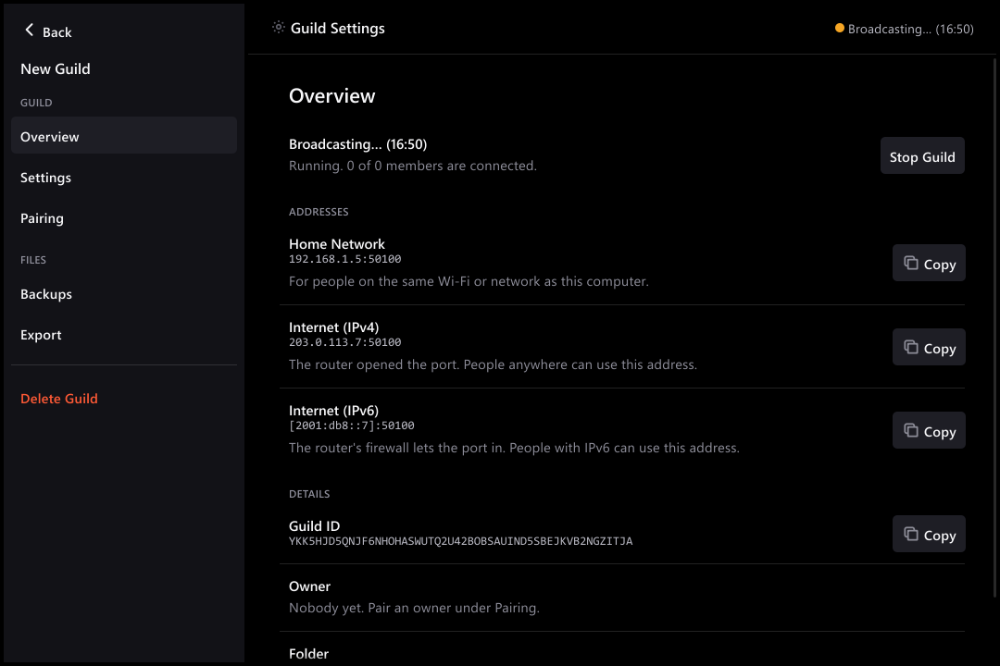
A guild's addresses (made-up ones here).
Home Network: for people on the same Wi-Fi.
Internet (IPv4): for everyone else, once the port is open.
Internet (IPv6): the newer kind of address. It needs no forwarding, though some routers'
firewalls must be told to let the port in.
Members' apps learn all of these, so they keep finding the guild when they leave home, or when your
internet address changes. To stop GuildForge asking the router, turn off Port Forwarding
in the guild's Settings (or guild-forge setup=1 router=off).
If the Overview says your provider shares one address among many homes (CGNAT),
no forwarding can help over IPv4: the address belongs to your provider. This is usual on mobile data and
phone hotspots. People can still reach the guild over IPv6 if both sides have it, or your provider may
sell a public IPv4 address.
Forwarding the port by hand
If the Overview says the router didn't answer or refused, set it up in the router yourself:
Find this computer's home network address: it is the Home Network address on the
guild's Overview, without the port (for example 192.168.1.5).
Open the router's settings page: type its address in a web browser. It is usually printed on a
sticker under the router, often 192.168.1.1 or 192.168.0.1, with the user name and
password to sign in.
Find the forwarding page. Routers call it Port Forwarding, Virtual Server, NAT
or Applications, often under Advanced.
Add a rule: protocol TCP, external and internal port both the guild's port (like 50000),
and the computer's home network address from step 1. Save it.
Find your internet address on the router's status page (often WAN or Internet).
People join with it and the port, for example 203.0.113.7 and 50000.
If the router's internet address starts with 100.64 to 100.127, 10., 172.16 to 172.31, or 192.168,
your provider shares it (CGNAT), and the rule won't help: use IPv6 instead.
IPv6 firewall
For IPv6, look in the router's settings for IPv6 Firewall or IPv6 Filter, and allow
incoming TCP to this computer's IPv6 address (the Internet (IPv6) line on the Overview) on the
guild's port.
Some routers can be asked automatically only after UPnP is turned on in their settings; turning
it on is an alternative to these steps.
A name instead of an address
You can give people a name, like nexus-server.com, set up with any name (DNS) service to point
at your guild's internet address. People type the name in the Link box. If you move the guild to
another computer, change where the name points, and nobody has to do anything. A name doesn't hide your
address, though: apps still connect straight to it.
A backup's name is S + the guild number + the date (DDMMYYYY) + V +
the number of the backup on that day. Going back to a backup first saves the current state as a
new backup, so it can be undone. A running guild is stopped and started again automatically.
Changes something:backup=1 adds a backup file;
fall-back=1 NAME puts the guild back to that backup. Only reads:fall-back=1 on its own just lists the backups.
Moving a guild to another computer
$ sudo guild-forge export=1
Exported GUILD#1@50000 to:
/home/you/GUILD1-2026-11-15.nexus (2.4 KB)
The .nexus file is encrypted with the guild's password. On the other computer, run
guild-forge import="GUILD1-2026-11-15.nexus", then give the guild a port with setup.
The owner, members, channels and messages come along; the port does not.
Changes something:export=1 adds the .nexus file
and leaves the guild as it is; import adds the guild to the other computer.
Deleting
guild-forge delete=1 asks for the password and a confirmation, then whether to also
erase the folder and its backups (both are kept unless you say otherwise). A kept
folder can be added back later with guild-forge import="FOLDER". If you delete a guild's
folder by hand, guild-forge notices and removes the guild from its list.
Changes something: each part happens only after you answer
y to it. An erased folder can't be brought back, except from a backup.
Your user
Open Nexus from its shortcut. The welcome screen has just two choices, and the gear at the
bottom right holds Licenses and Check Updates.
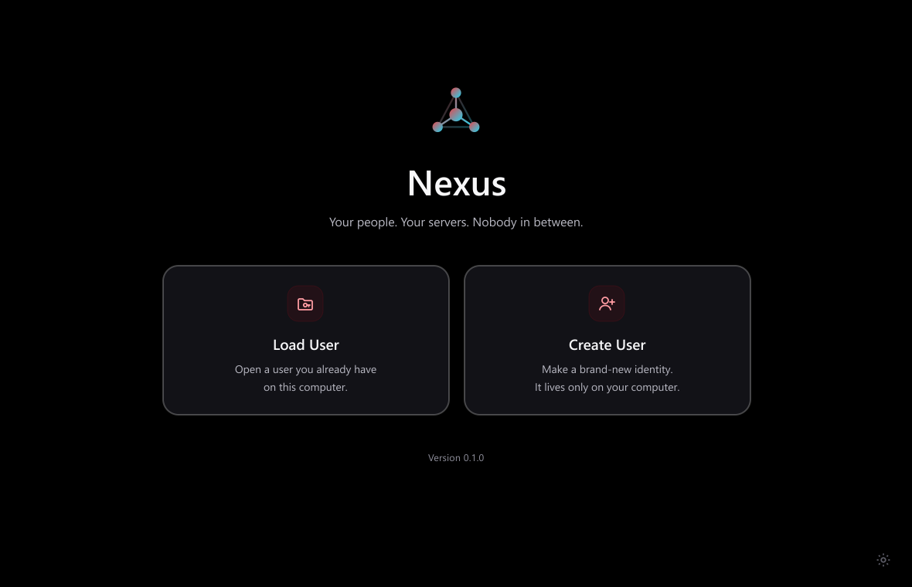
The welcome screen.
Create User
Choose a name and a password (at least 8 characters), and click Next. Then type the password
again and check the folder. It fills itself in as Documents\Nexus\<name>; use
Browse… to choose another place.
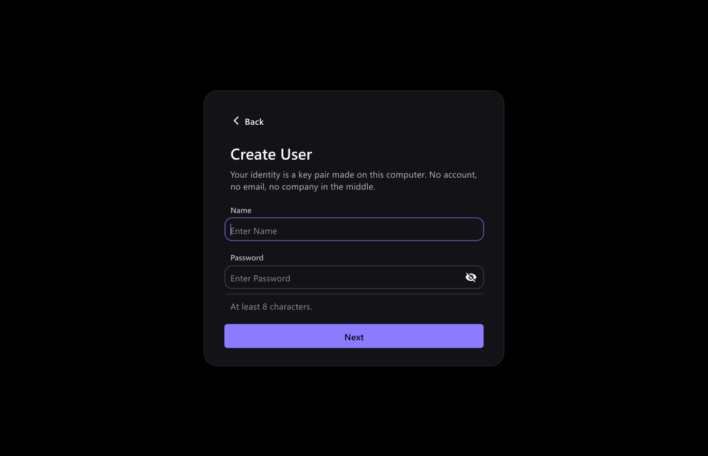
Creating a user. The bar under the password shows how strong it is.
Remember your password. Your private keys are locked with it.
Make a Recovery Code (see below) as soon as you can: without the password or the code,
the user cannot be opened.
Home and your profile
After you create or load a user, you see the Friends page. The left rail lists your guilds,
and the + adds one. At the bottom left are you, the gear (User Settings) and the
lock.
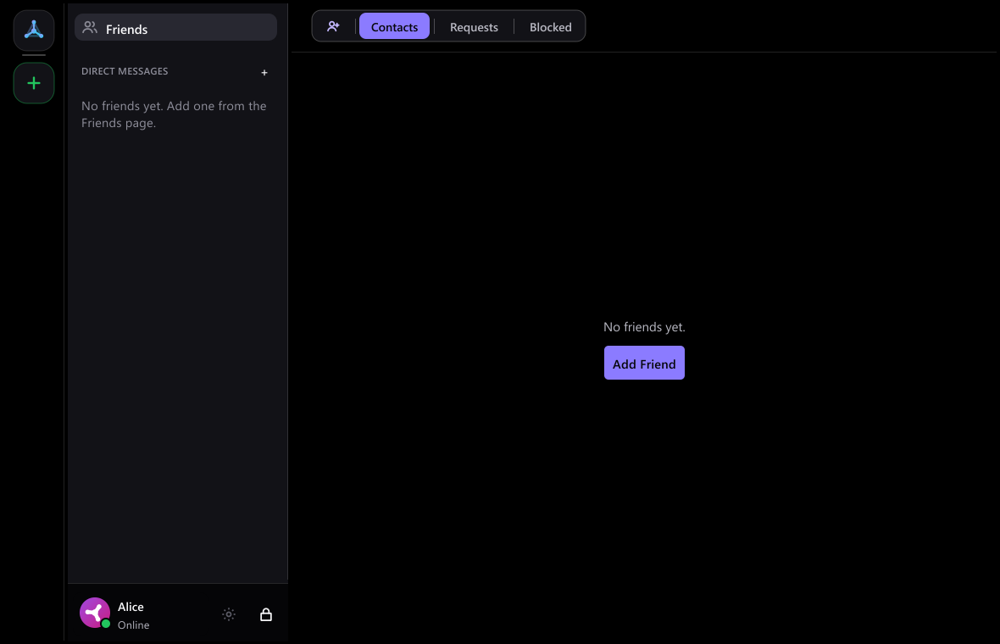
Home: the Friends page.
Click your name at the bottom left to see your profile: your name, a short version of your
user ID (click it to copy the whole ID), and your status. The status list has Online
(green), Idle (yellow) and Do Not Disturb (red). It is saved in your user folder.
Editing your profile
Edit Profile (or User Settings, Profile) changes your name, picture, banner and bio (a
short text about you, with Markdown). Everyone in your guilds and your friends see them. Until you
choose a picture, you have a small network drawing in your own colours.
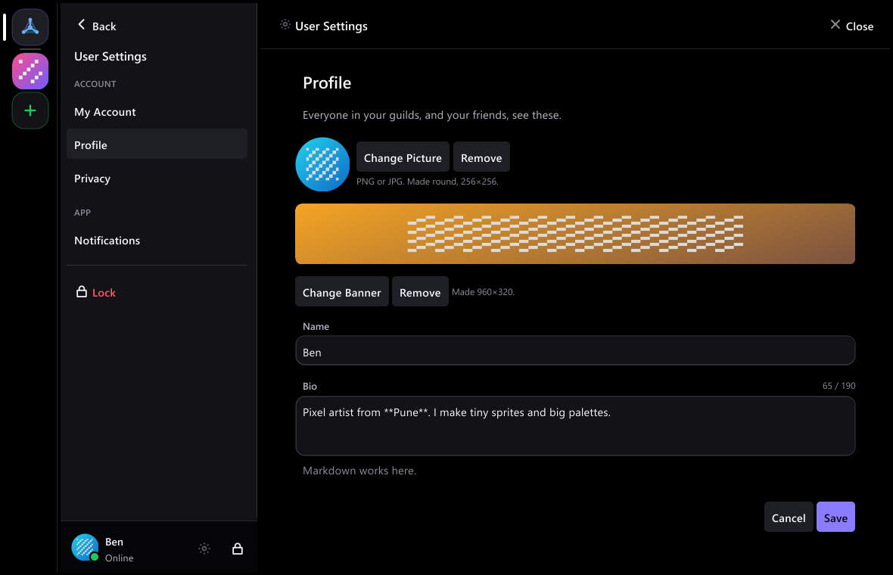
User Settings, Profile.
In each guild you can also have a nickname: the guild's gear, then Nickname. People with
Manage Nicknames can change the nicknames of people lower in rank.
Password and Recovery Code
Both are in User Settings, under My Account. Password needs your current password. Recovery Code makes a code of 32 letters
and digits, shown only once: write it down or print it, and keep it safe. If you forget your password,
click Forgot Password on the sign-in screen and type the code to choose a new one. Making a new
code stops the old one working.
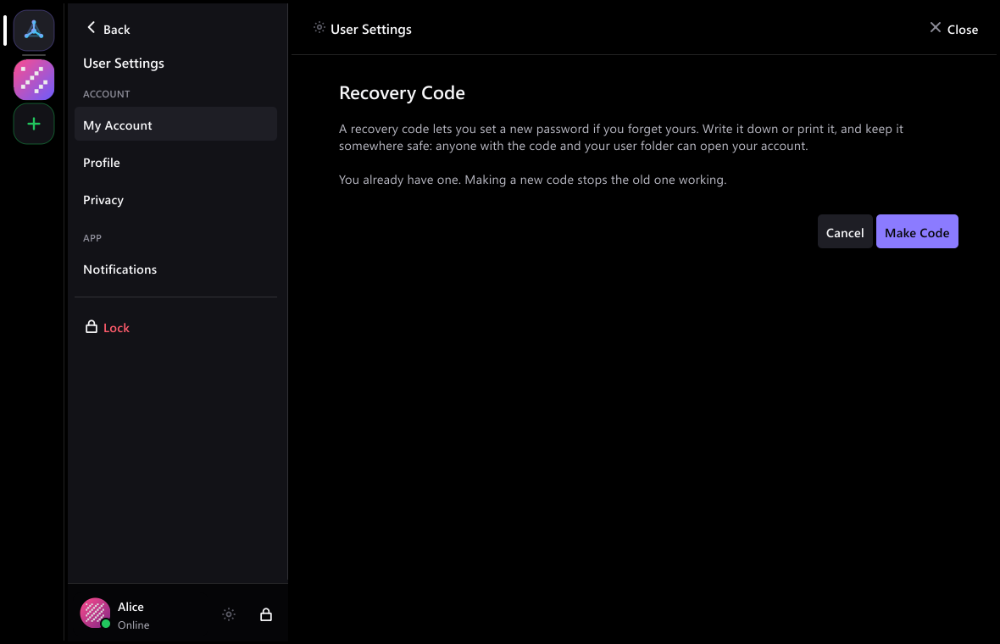
Making a recovery code.
Notifications and sounds
When the Nexus window isn't in front, Windows (or Linux) shows a pop-up for mentions of you or
your roles, replies to your messages, and private messages. Notifications above a
chat chooses All Messages, Mentions Only or Nothing for that channel; the guild's
gear, then Notifications, does it for the whole guild. Guilds remember these choices, which
categories you folded and what you have read, so they follow you to another computer. A short sound
plays for new messages; turn off Sounds in User Settings, under Notifications.
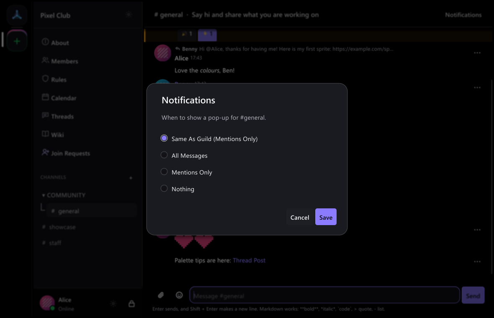
Notifications for one channel.
Lock and Load User
The lock button (bottom left) signs you out and clears your keys from memory.
Load User lists the users opened before on this computer; you can also Browse…
to a user folder, or type its path.
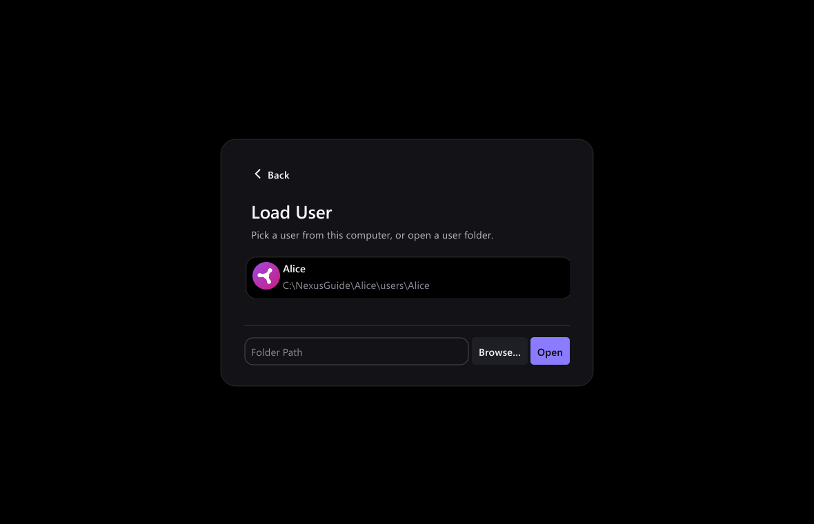
Load User. Hover over a user and click × to remove it from the list (the folder itself is not touched).
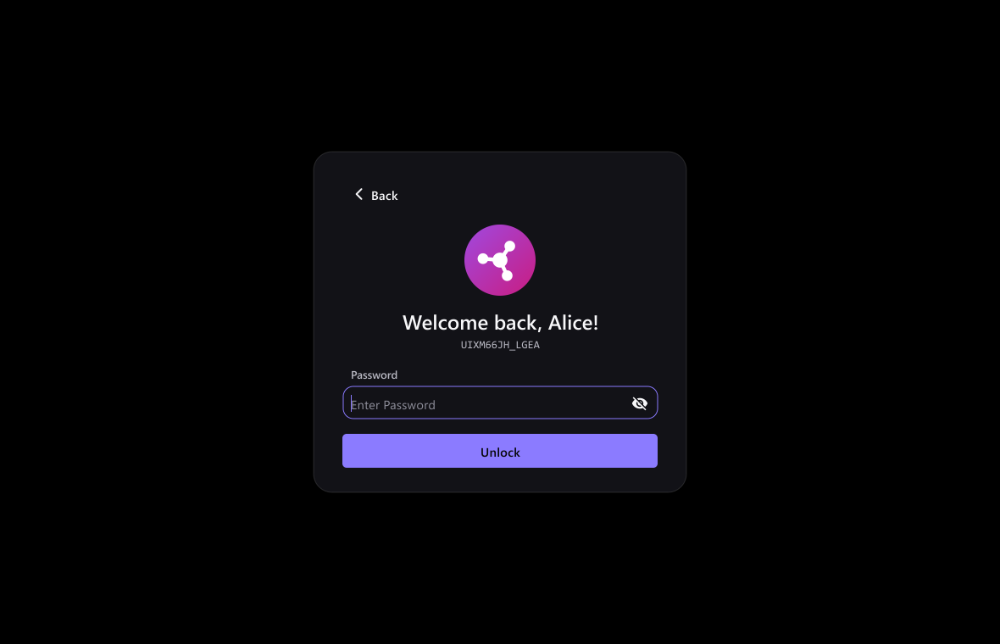
Unlocking a user.
Joining a guild
Anyone with a guild's address and port can ask to join.
Click the green +, stay on the Join tab, type the address in Link (IP Address) and the
port in Port, and click Check. (You can also type both in the first box, like
127.0.0.1:50000; the Port box is then ignored.)
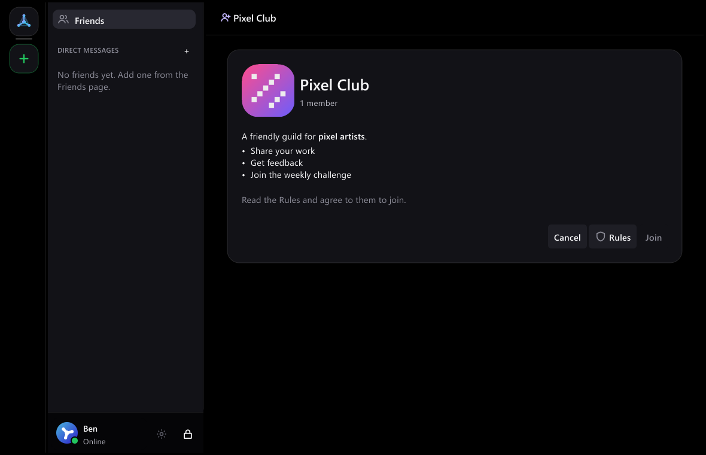
After Check, the guild's About page fills the window, with Cancel, Rules and Join.
Rules opens the guild's Rules as a full page. If the guild asks you to agree to them,
Join stays grey: open the Rules, scroll to the end, and click I Agree. If the guild has a
password, type it in Guild Password. After Join come the guild's questions, if it has any,
and then, if the owner approves new members, your request waits for them. If you don't meet a rule
(for example, an invite-only guild), Nexus tells you why.
The questions
If the guild has a CAPTCHA, you answer its questions one page at a time, in the main area. Once you move on,
you can't change an answer. The choices are shuffled each time.
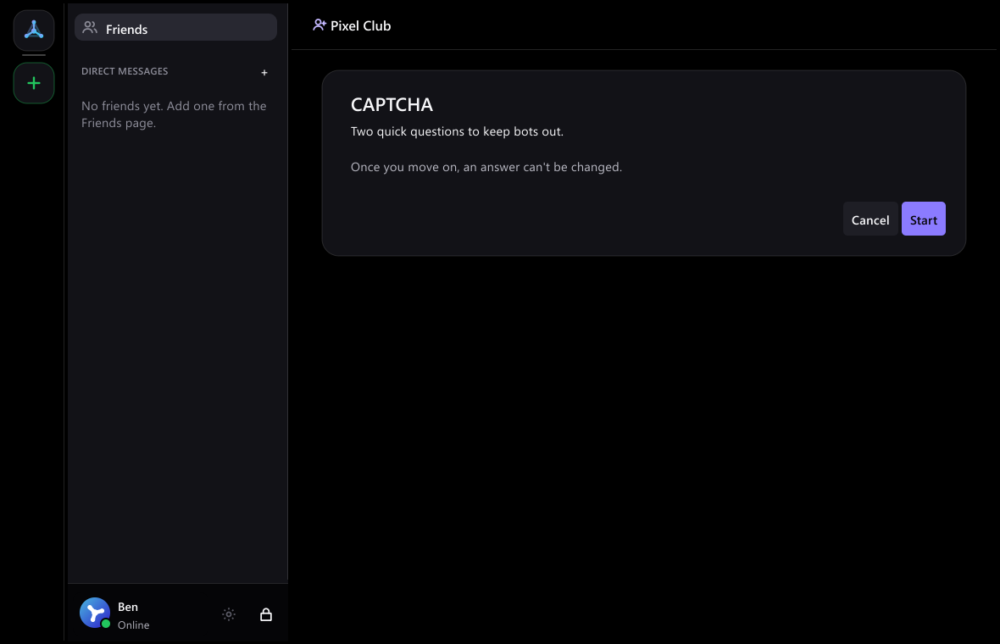
The owner's welcome, then one question per page.
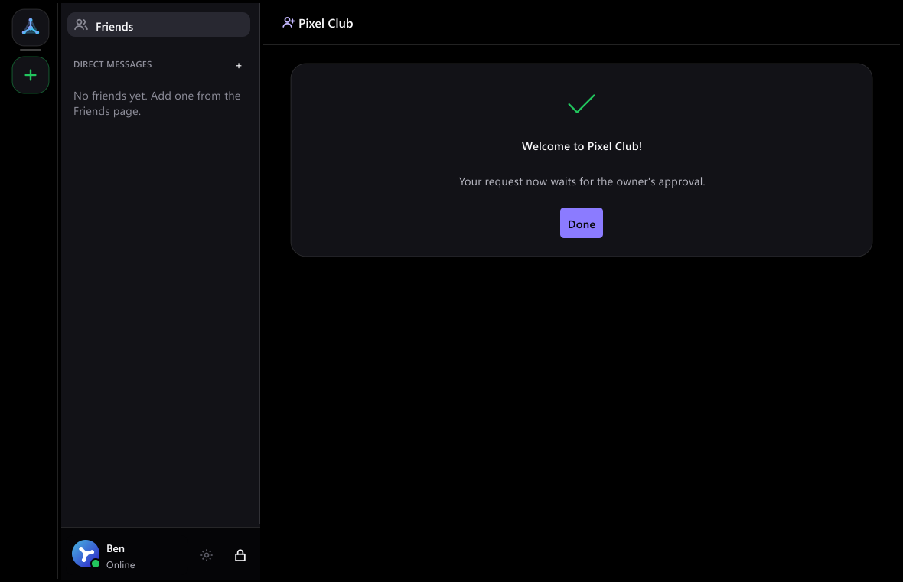
Passed, with the owner's own message.
Nexus only tells you whether you passed, not which answers were wrong.
After 3 failed tries, you must wait 24 hours before trying again.
Waiting for approval
If the owner approves new members, the guild appears grey in your list with
Waiting for the owner's approval. As soon as the owner accepts you, it turns to colour by itself.
Cancel Request removes it from your list.
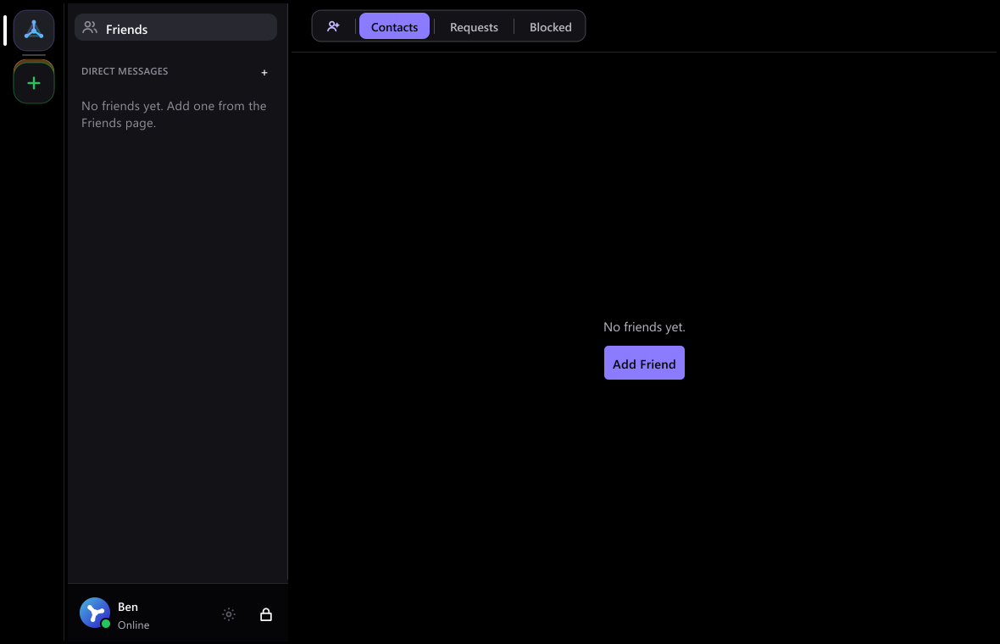
Waiting for the owner's approval.
If you are later removed from a guild, it shows You were removed from this guild, with a
button to remove it from your list.
Inside a guild
The About page
Every guild has an About page: its picture, name, number of members and About text, with
Copy Address to invite people. The About text can use Markdown, such as **bold** and lists.
People who help run the guild also see a strip with join requests waiting and Server Settings.
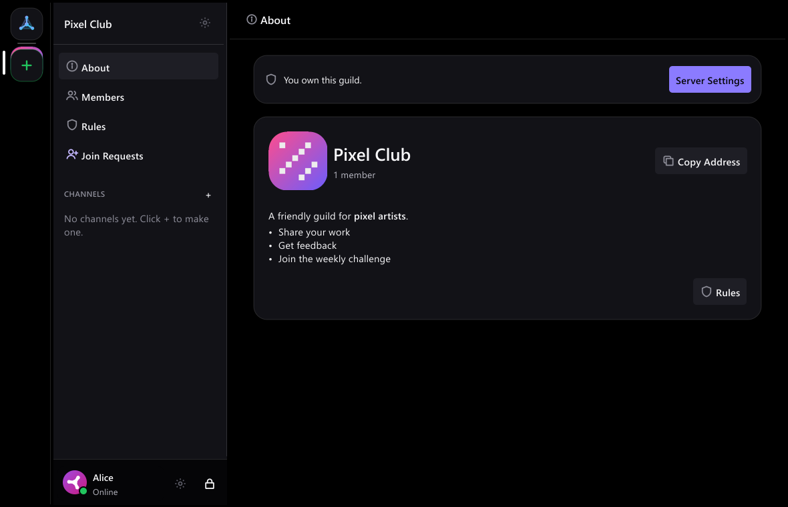
A guild's About page.
On the left, under the guild's name, are About, Members (the owner has a crown),
Rules (if the guild has them), Join Requests (for staff) and the guild's channels.
Channels can sit in categories (names in capitals) and in folders (with a folder icon), and
lines show what is inside what. If the guild has Rules, the About page
also has a Rules button that opens them on their own page.
Server Settings
The gear next to the guild's name opens its Server Settings page. The categories are on
the left, in groups. Everyone has Nickname and Notifications; people who help run the guild
see the categories they may use. Leave Guild is at the bottom.
Server Settings, as the owner sees it.
When a guild can't be reached
The app keeps a live connection to each guild. If a guild stops, or its computer is off, its
picture turns grey; hover over it to see why. Nexus keeps trying, and the guild turns back
to colour by itself when it can be reached again.
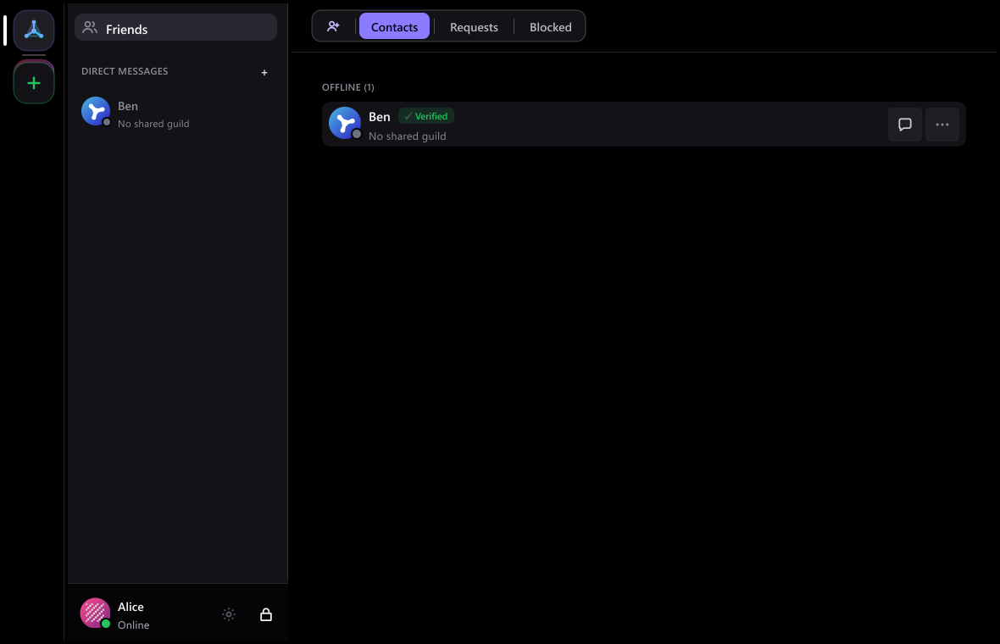
An offline guild. Its name and picture are still shown.
One computer at a time
You can use the same user on several computers, but each guild talks to only one of them at a
time. On the other computer, the guild is grey with Active on another computer and a
Use Here button that moves it over.
Channels and messages
Click a channel on the left to open it. Type in the box at the bottom and press Enter to
send; Shift + Enter starts a new line.
A channel: a reply, a reaction and a mention.
What you can do with a message
Each message has a ⋯ button on the right. It opens a menu:
Menu Item
What it does
React
Adds an emoji under the message. Click an emoji under a message to add or remove yours.
Reply
Your message shows the start of the message it answers.
Edit
Changes your own message; it then shows (edited). Esc cancels.
Delete
Deletes your own message. People with Manage Messages can delete anyone's.
Mentions
Type @ and the start of a name, then pick the person from the list. They see the message
highlighted, and a red number on the channel if they weren't looking at it.
Formatting (Markdown)
You type
You get
**bold**
bold
*italic*
italic
~~struck out~~
struck out
`code`
code
> quote
a quoted block
- item or 1. item
a list
[text](https://…)
a link; links open in your normal web browser
Catching up
Messages arrive straight away. Channels with new messages are shown in bold, and messages
sent while your app was closed are there when you open it. Scroll to the top and click
Load Earlier to load more.
Encryption
Every message is encrypted on the sender's computer with the channel's key, and signed by its author.
The guild stores the messages but cannot read them. Your app gets each channel's key
from other members automatically. A 🔒 next to a channel means your app is still waiting for its
key: it arrives when a member who has it comes online.
Pictures and files
The paper clip, next to the message box, sends a picture or any file of up to 2.8 MB. Pictures show in the
chat; click a file's name to open it. Files are encrypted with the channel's key, just like messages.
Custom emoji
A guild can have up to 50 emoji of its own (Server Settings, Custom Emoji, for people with
Manage Guild). Click the smiley face by the message box, or type :name:. You can use the
emoji of every guild you're in, everywhere: the guild you use it in gets a copy, so everyone there sees it.
A message of only emoji shows them big, and the message's ⋯ → React lists them too.
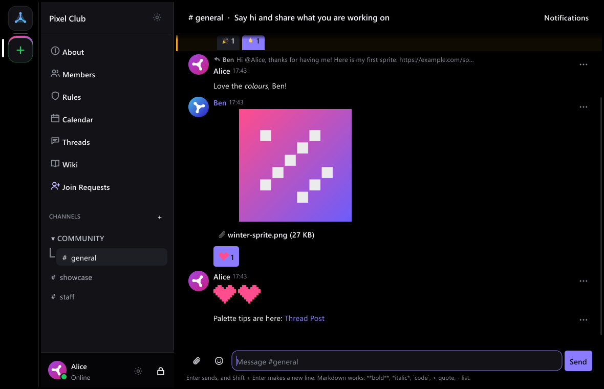
A picture, big emoji, a custom reaction and a
link to a Thread post.
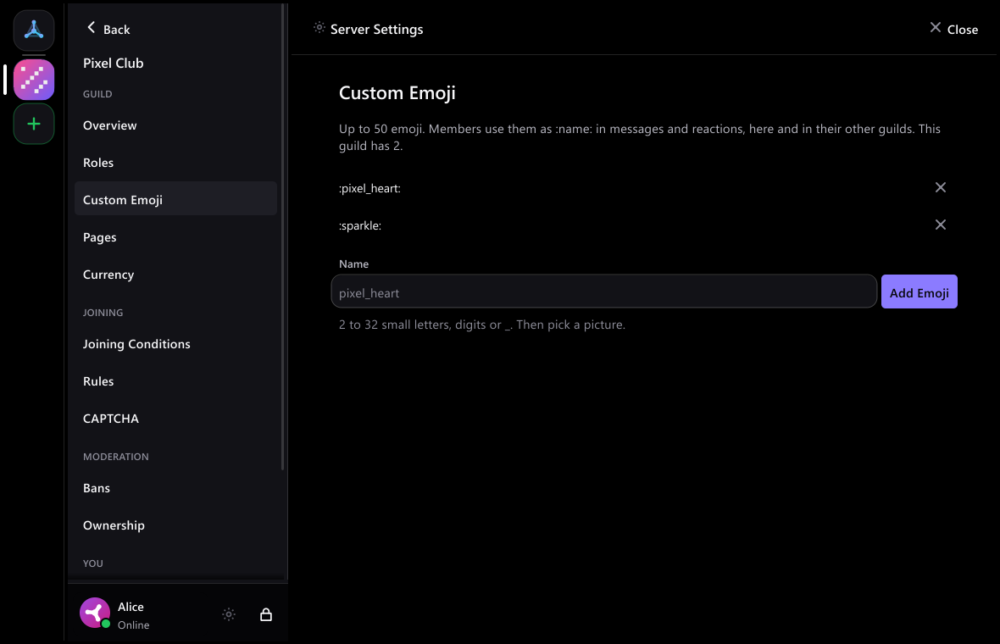
Server Settings, Custom Emoji.
Calendar, Threads and Wiki
A guild can have three more pages, listed under About in its side bar. People with
Manage Pages turn them on in Server Settings, under Pages. Unlike channels, these pages are
readable by the guild's host.
Calendar
The month, with the days that have events marked, and the month's events below it. Use the arrows
for other months. Click an event to read its details. People with Manage Events use New
Event: a title, a start date with an optional time and time zone, an optional end, and details in
Markdown. Times are shown in the time zone they were written in.
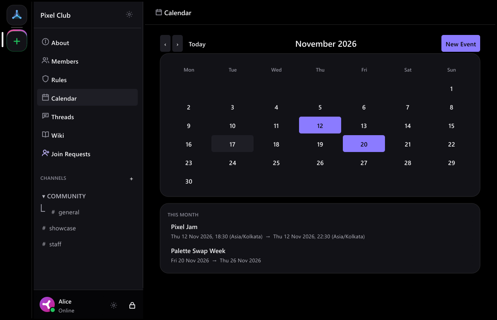
The Calendar.
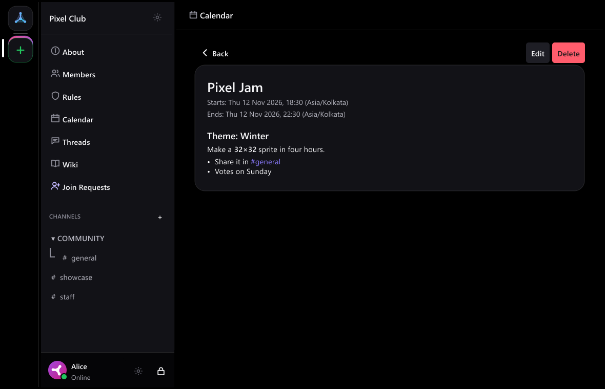
An event's page.
Threads
Posts with comments, newest first. Like 👍 or dislike 👎 each post or comment once (click again to
take it back). Reply answers a comment; replies are indented under it. You can edit and delete your
own posts; people with Manage Pages can delete anyone's. Copy Link copies a link to a post
that you can paste in a chat.
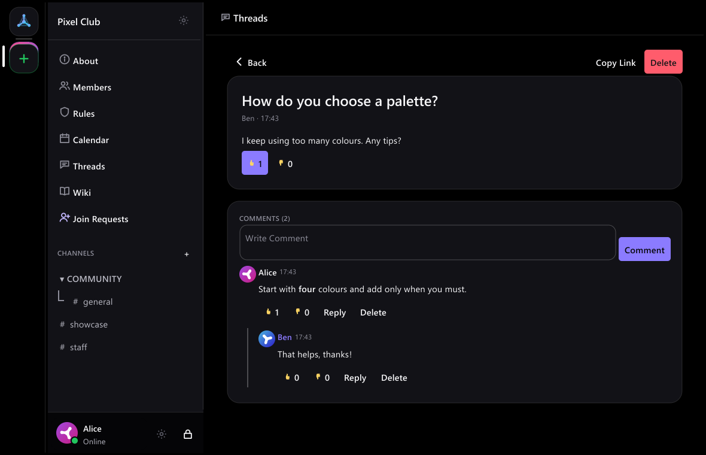
A post, a comment and a reply.
Wiki
Pages of knowledge, listed under their headings. People with Edit Wiki make and change them.
In a page, [[Page Title]] links to another Wiki page and #channel-name to a
channel.
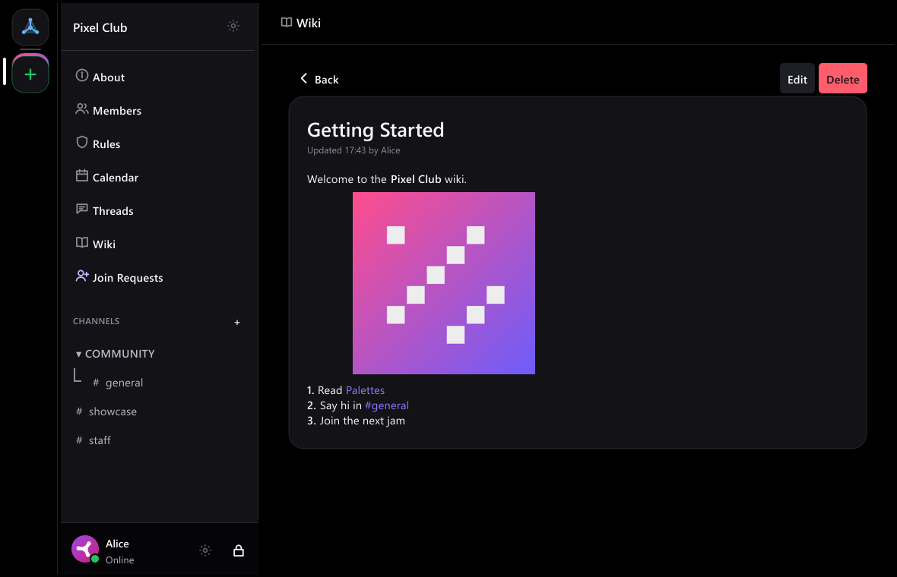
A Wiki page with a picture and links.
Pictures
In the Rules, events, posts and Wiki pages, Add Picture uploads a picture to the guild and puts it
in the text. Pictures are only ever shown from the guild, never from other websites, so reading a page
never tells another website your address.
When the Rules change
If you joined by ticking "I agree to follow these rules" and the Rules change later, the About
page tells you, once. By staying a member you agree to the new Rules; Rules shows them, and
OK hides the notice.
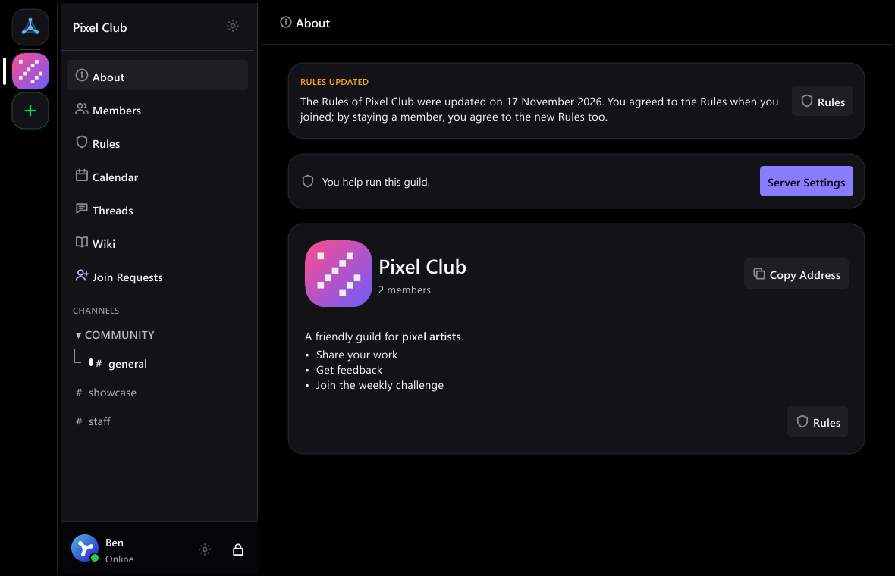
The notice Ben sees after the Rules changed.
Wallet and Shop
A guild can have its own currency (Server Settings, Currency, for people with Manage
Currency): a name like Pixels, an icon, and an optional Shop. It is not real money.
Staff make coins into the guild's bank and give them to members from Wallet → Bank.
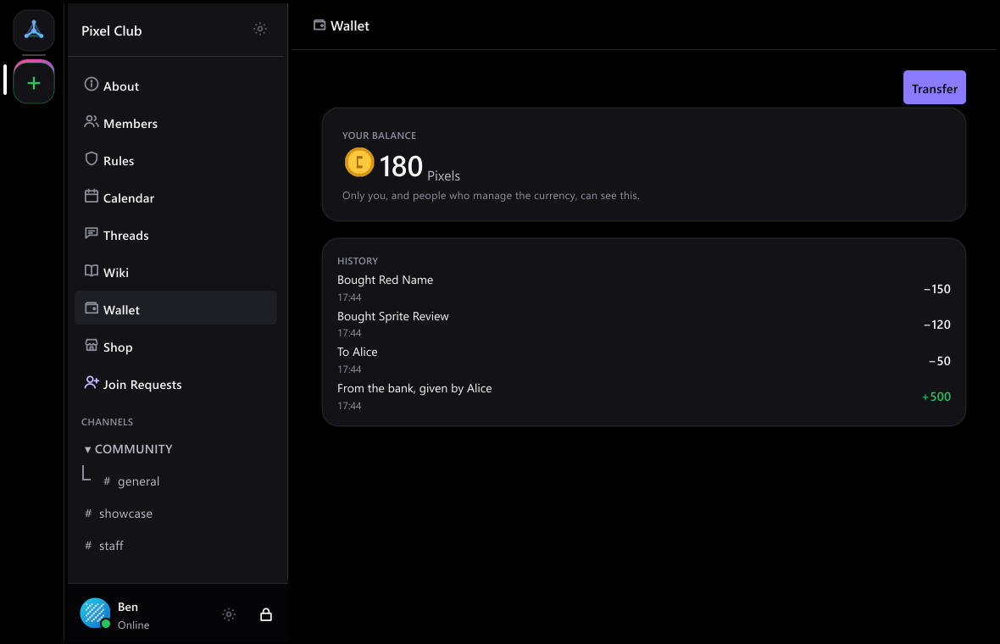
Ben's Wallet: his balance and history. Only he and the staff can see it.
To pay someone, click Transfer in your Wallet or in their member window, or type
/transfer @name 50 in a channel. Nexus always asks before sending. /balance shows
what you have. A message that starts with / is a command and is never sent; to send one that
starts with /, begin it with //.
In the Shop, Buy pays for an item; the coins go back to the bank, and the staff see who
bought what in the Bank and deliver it. A Role item is yours as soon as you buy it: the Shop then shows
Equip or Unequip. Some roles can't be worn together (a guild selling coloured names, for example),
so equipping one takes the other off.
Some items are auctioned instead: where the price would be is the highest bid so far, with the
Highest Bidder and when the auction ends under the description. Bid shows your balance and the current
bid; your bid is taken from your wallet and held, and comes straight back if someone bids more. When
the auction ends, the highest bidder has the item (a Role at once; staff deliver other things). Staff choose
Sale Type: Auction with a starting bid and an end time when making an item.
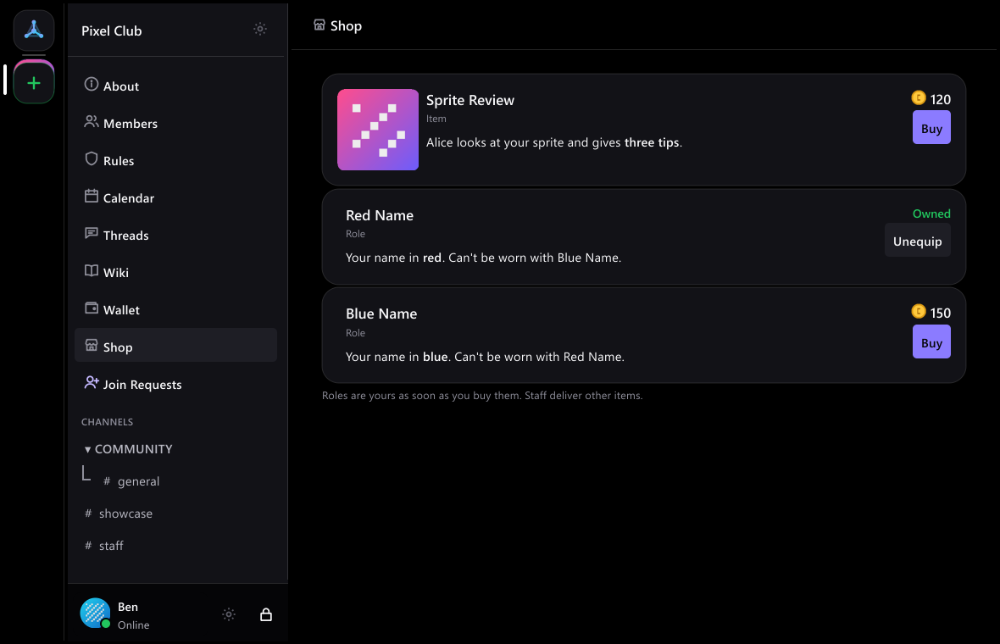
The Shop.
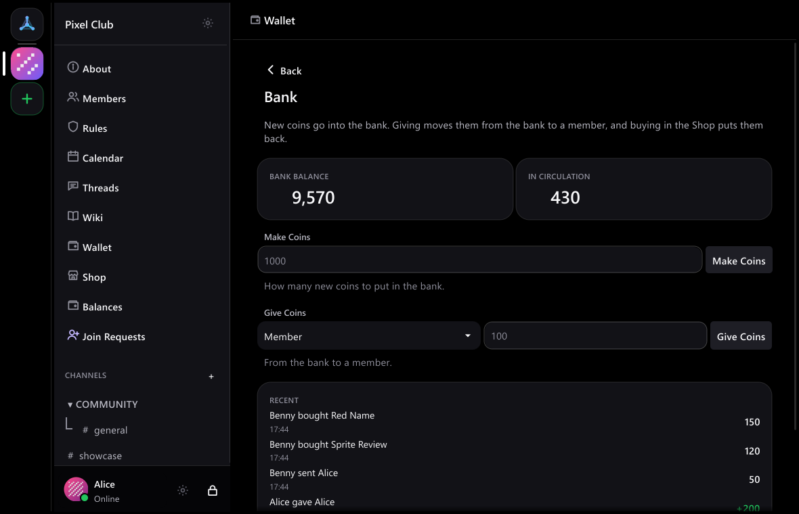
The Bank, for staff: Bank Balance, In Circulation, and making and giving coins. Every member's balance is on the Balances page.
Polls, spoilers and more
The clock by the message box has Create Poll, Schedule Message, Disappearing
Message, Scheduled Messages and Pinned Messages. Pins at the top of a chat, with how many
there are, also opens the pinned messages.
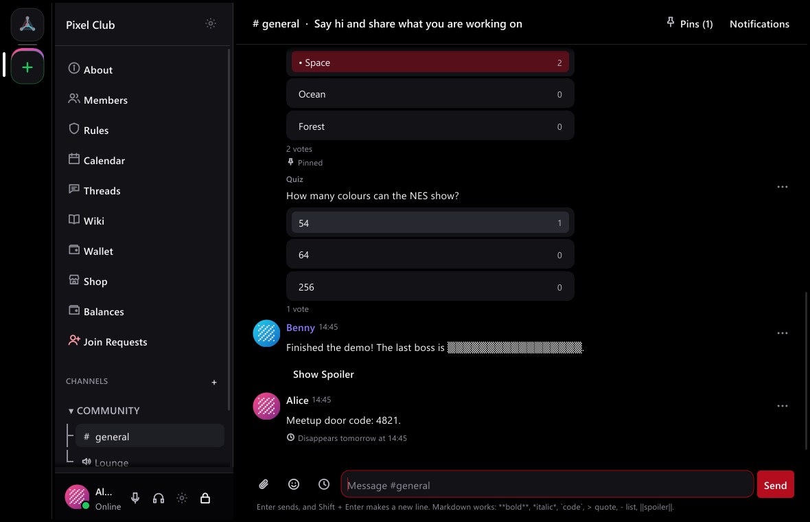
A forwarded message, a pinned poll, a quiz, a spoiler, and a message that disappears.
Polls have 2 to 10 choices. Click a choice to vote, and again to take it back. In
Quiz Mode one choice is right: it shows once you answer, and an answer can't be changed.
Spoilers: write ||like this||; it stays hidden until Show Spoiler.
Schedule Message: choose a time, then write and Send. The guild posts it then, even if your
computer is off. Scheduled Messages lets you cancel it until then.
Disappearing Message: your messages delete themselves after 1 hour, 1 day or 1 week, until you
choose Off.
A message's ⋯ has Forward (to any channel you can write in, or a friend), Pin (with
the Pin Messages permission) and, once it was edited, Edit History.
Slow Mode, in a channel's Messages settings, lets each member send one message every so
often.
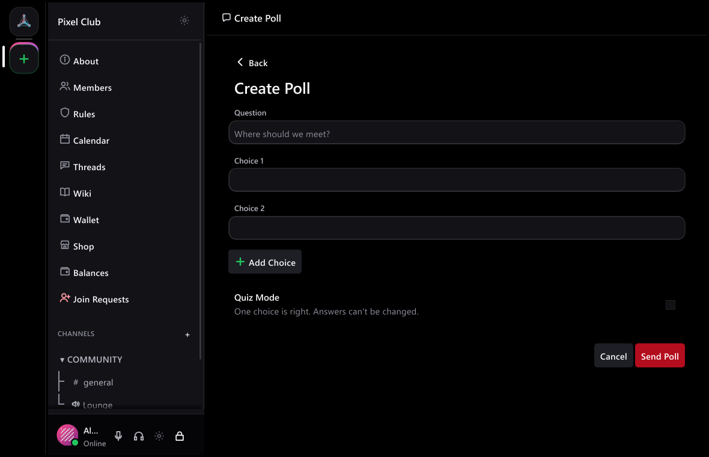
Create Poll.
The guild still can't read any of it: questions, choices, spoilers and forwarded messages stay sealed.
It knows only what it needs, such as who voted and when a message disappears.
Voice channels
A voice channel is for talking. Make one with the + by CHANNELS and the Kind
Voice Channel; it shows with a speaker icon. Click it, then Join Voice. Everyone in it
is listed under its name, with a green ring while they talk. You can be in one voice channel at a time.
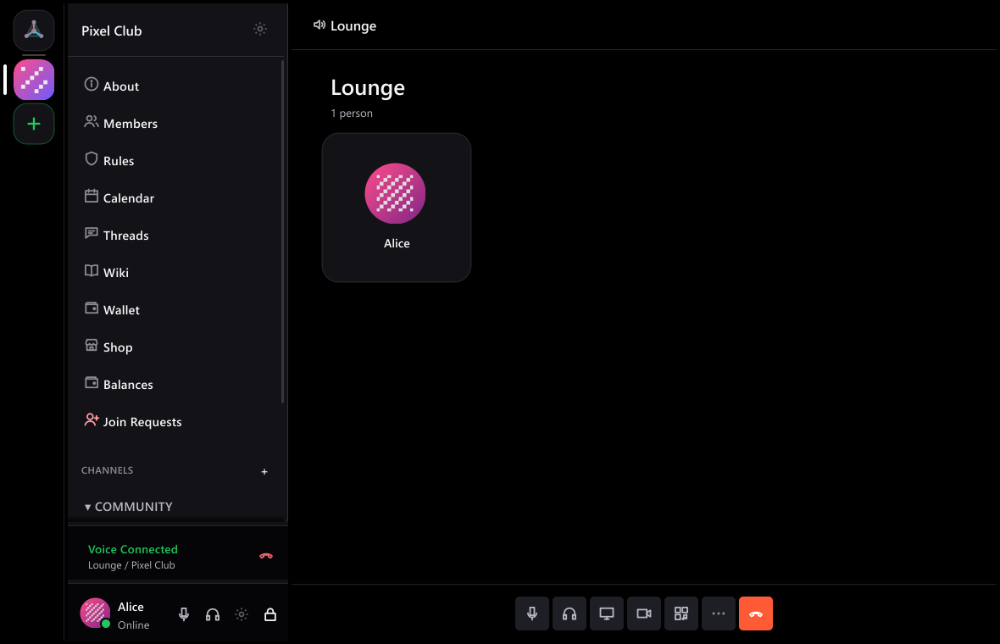
In a voice channel. The bar above your name says where you are; the red phone leaves.
Once you have joined, the voice page's buttons are icons in a row at the bottom of the window (each
says what it does when you rest the pointer on it): mute, deafen (you hear nothing, and are muted
too), share your screen, your camera, the soundboard, ⋯ for more (such as Lock Channel), and the red
phone to leave. The microphone and headphones by your name do the same. Voice is sealed with the voice channel's key, like messages, so
the guild passes it on without being able to hear it.
Voice settings
User Settings, Voice: choose your microphone and speakers. By default your microphone sends
whenever you are louder than Input Sensitivity: talk, and set it just below where the bar turns
green. Under VOICE PROCESSING, Echo Cancellation (for speakers instead of headphones) and Automatic
Gain are on unless you turn them off. Noise Suppression is Strong (RNNoise, trained on real noise such as
typing, fans and traffic), Standard (lighter on the computer) or Off. Or turn on Enable
Push-To-Talk and hold a key (` unless you choose another) while you talk. On Windows the
key works even when another window is in front. Soundboard Volume sets how loud soundboard
sounds are for you.
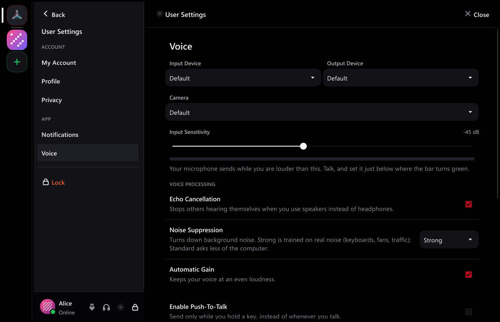
User Settings, Voice.
Sharing your screen
In a voice channel, Share Screen lets the others see your screen, or one window. Choose it
from the Screens or Windows tab, pick 720p or 1080p, and leave Share Sound
on to send what your computer plays (a video's sound, a game's). Your microphone still goes through
voice as usual, and the call itself isn't sent back. Go Live starts it.
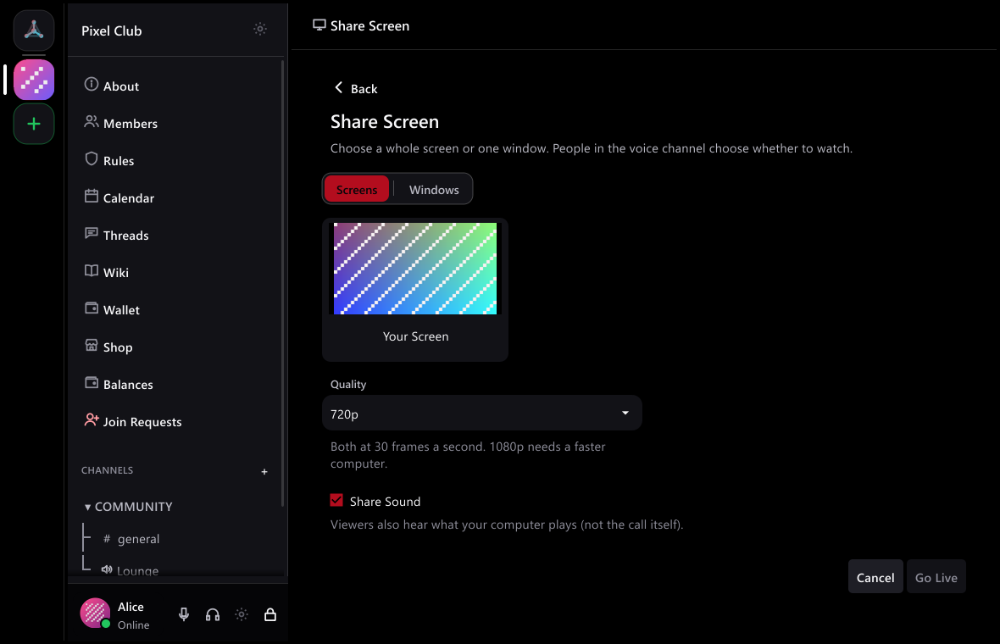
Share Screen.
Others see LIVE by your name and choose Watch; your screen then shows above the people in
the channel. Like voice, the picture is sealed with the voice channel's key, so the guild passes it on
without seeing it, and only to people watching.
In User Settings, Voice, you can choose a Push-To-Blur and a Push-To-Mute key. While
you hold the first, your shared screen is blurred so nothing on it can be made out; while you hold the
second, the sound you share goes silent (your microphone keeps working). They are for moments you
don't want shown or heard, like something private on screen or music you may not share.
People in a voice channel
Click someone's tile on the voice page to see their Volume: from 0 to 200%, only for you, and
remembered for that person. While someone shares their screen, their tile shows a small picture of
it, about every 5 seconds, so you can see what it is before choosing Watch.
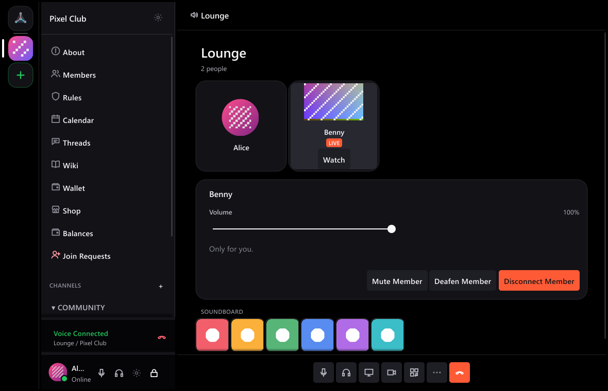
Ben's tile, chosen: his volume, and what a moderator may do.
Moderators see more, for people ranked below them, each with its own permission: Mute Member
and Deafen Member (which only a moderator can lift, even if they leave and come back), Move
Member to another voice channel, and Disconnect Member. Lock Channel stops anyone new
joining until it is unlocked. Someone with Priority Speaker can choose a Priority Speaker Key
in User Settings, Voice: while they hold it and talk, everyone else is quieter.
The soundboard
A guild can have up to 25 short sounds, each up to 10 seconds. Someone with Manage Soundboard
adds them in Server Settings, Soundboard: a name, a picture for its button if wanted (Choose
Picture), then Choose File for a WAV or Ogg Opus file. In a voice channel, the soundboard button at the
bottom (or ⋯, Show Soundboard) opens them as square pictures; rest the pointer on one for its name, and click
to play it to everyone there.
Cameras
In a voice channel, Start Camera turns your camera on. Your camera then shows on your tile for
everyone in the channel, like an online meeting; nobody needs to click Watch. Choose which camera in User
Settings, Voice. Like voice, it is sealed with the voice channel's key.
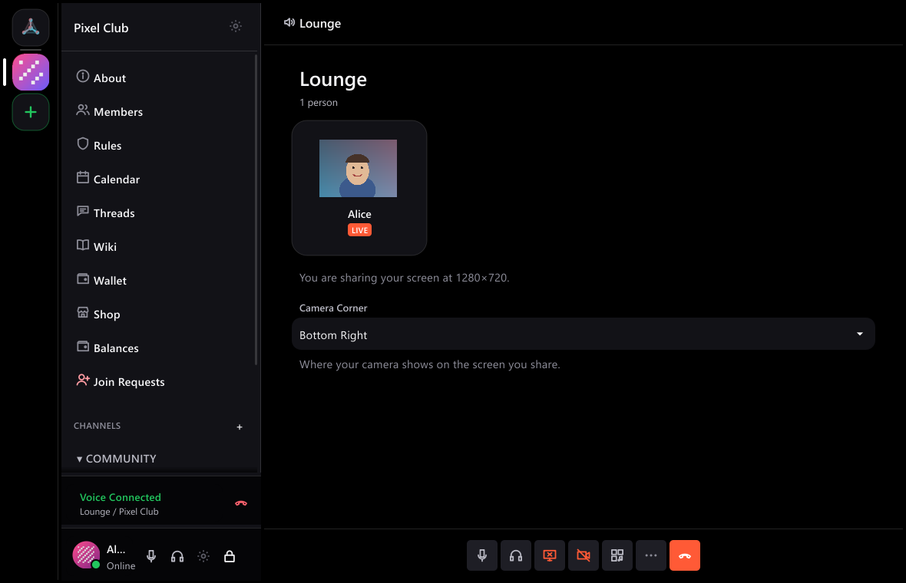
Camera on while sharing (a made-up camera here).
If you share your screen with your camera on, your camera is drawn into a corner of your shared
screen, so viewers see both. Camera Corner on the voice page picks the corner, even while you are
live.
Friends and private messages
Private messages are between two friends. They travel through a guild you both belong to,
sealed so that only the two of you can read them.
Adding a friend
In a guild's member list, click ⋯ next to someone, then Add Friend. Or, on the Friends page,
open the Add Friend tab (the icon at the left of the tabs) and paste their user ID (from their profile). They see your request
in the Requests tab and can Accept or Decline. Until they accept, neither of you can send
messages.
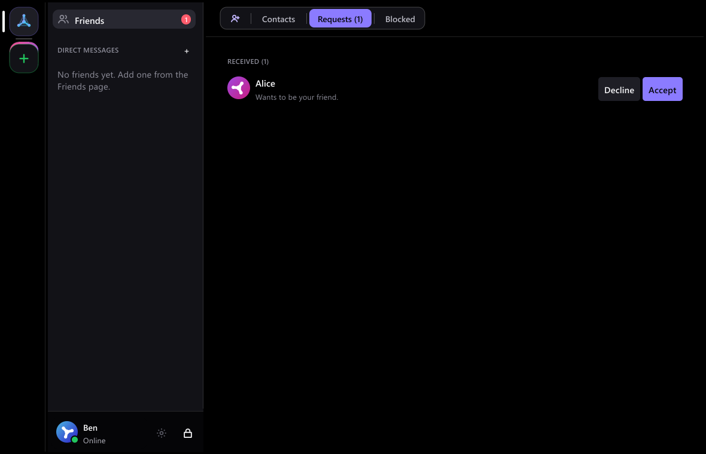
Ben sees Alice's request in the Requests tab.
The All tab lists every friend, online ones first, grouped by status and in name order. The
Blocked tab lists the people you blocked.
Chatting
Click a friend to open your chat. It works like a channel: Markdown, replies, reactions, editing and
deleting (the ⋯ next to a message), and typing. The paper clip sends a picture or file of up to 2 MB.
Ticks next to your messages show how far they got: one grey tick when sent, two grey ticks when
your friend's app received it, and two red ticks once they read it (they can turn reading ticks off in
User Settings, Privacy, Read Receipts). The smiley adds emoji.
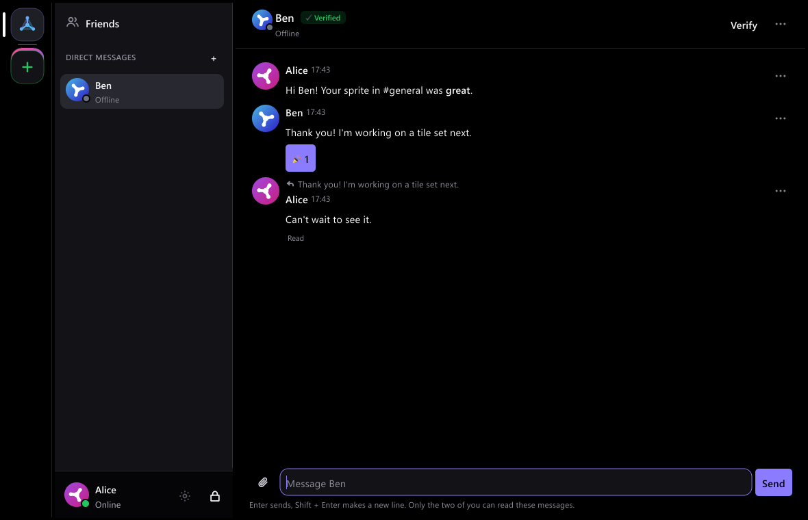
A private chat, with a reply, a reaction, ticks, and the Verified badge.
If your friend is offline, the guild keeps your message (sealed) for up to 30 days and
delivers it when they come back.
If you no longer share any guild, your friend turns grey and you can't send until you share one again.
Your chats are kept on your computer, encrypted, in your user folder.
Verifying a friend
To be sure a friend is really who they say, use Verify at the top of your chat. Their app shows a
9-character code for you (like K7Q-4MZ-9TB); they tell it to you in person or on a call, and you
type it under Their Code. If it matches, a ✔ Verified badge appears next to their name. Your app
shows your own code for them in the same window. If their keys ever change, the badge turns into
⚠ Key Changed: verify them again before trusting them. Once verified, the same place offers Remove
Verification.
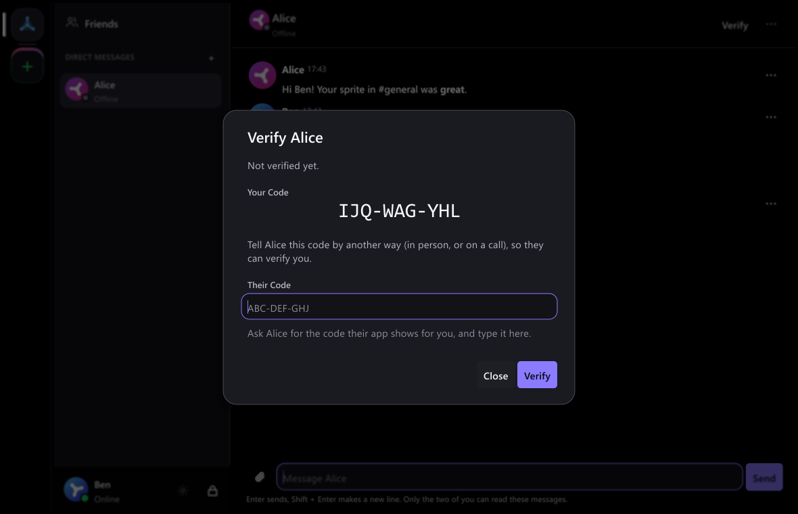
Ben's code for Alice.
Notes, removing and blocking
The ⋯ at the top of a chat has Note (a private note only you see), Copy ID,
Remove Friend and Block. A blocked person can't send you messages or requests, and their
messages in guild channels are collapsed for you. They aren't told. The Blocked tab on the Friends
page shows them, with Unblock.
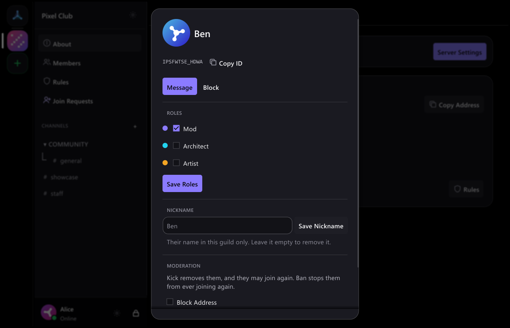
A member's ⋯ has Message (or Add Friend) and Block.
Becoming a guild's owner
A new guild has no owner. Pairing makes you its owner (ADMIN). You need the guild's
computer and the app.
On the guild's computer, start a broadcast: guild-forge setup=1 broadcast (or Pairing in GuildForge's window). It shows a one-time password.
GUILD#1@50000 is broadcasting until 18:42 (1 hour).
One-time password for GUILD#1@50000:
BT7-3ZI-P2B
Valid for 5 minutes (until 17:47). Making a new one cancels this one.
In the client, enter this computer's address and port, e.g.:
192.168.1.20:50000
A fresh one-time password any time: guild-forge OTP.
In the app, click the green +, choose the Pair Owner tab, type the address and port, and
click Check. Then type the one-time password and click Pair.
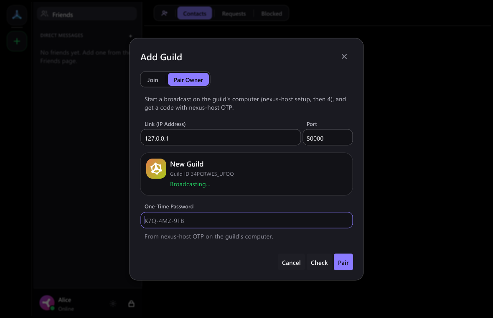
Pairing as owner. Check shows the guild and whether it is broadcasting.
Capital letters and dashes in the code don't matter.
After 5 wrong codes, the broadcast ends; start a new one.
A broadcast lasts 1 hour. Only one guild per computer can broadcast at a time.
The code travels inside the encrypted connection, so nobody on the network can read it.
Guild settings and channels
Server Settings
Right after pairing, Server Settings opens on Overview so that you can name the guild.
Later, open it with the gear next to the guild's name.
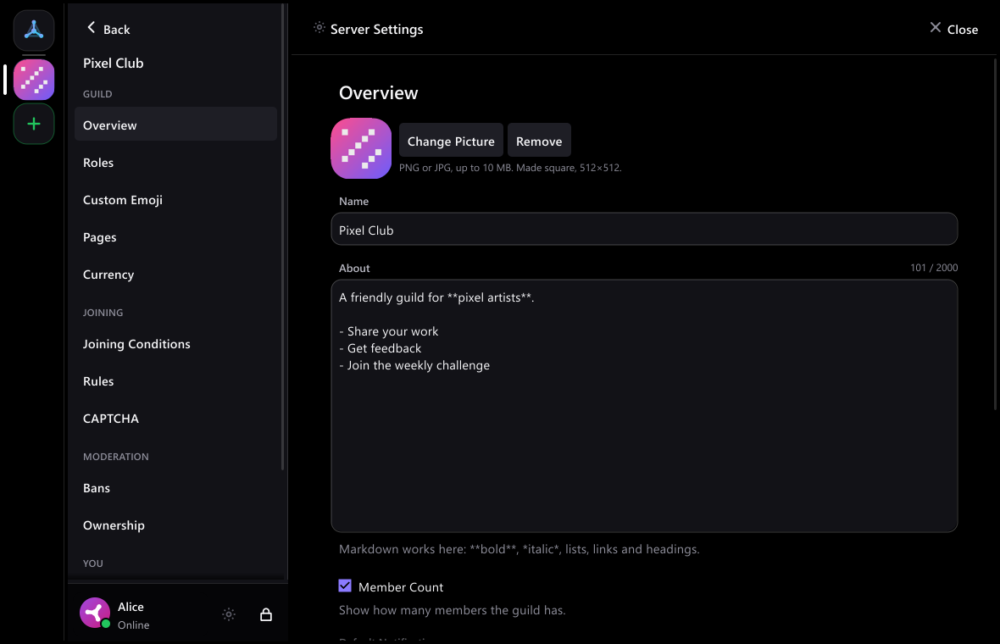
Overview: picture, name, About text, the member count, default notifications and the guild's details.
Pictures can be PNG or JPG files of up to 10 MB; Nexus crops them to a square and shrinks them to
512×512. Names can be up to 64 characters long, and the About text up to 2,000.
Making channels
Click the + next to Channels. There are three kinds:
Category: a heading that groups channels, like COMMUNITY.
Folder: a group that can be folded away, inside a category or another folder (up to 3 deep).
Channel: where people chat. Its Topic is shown at the top of the chat.
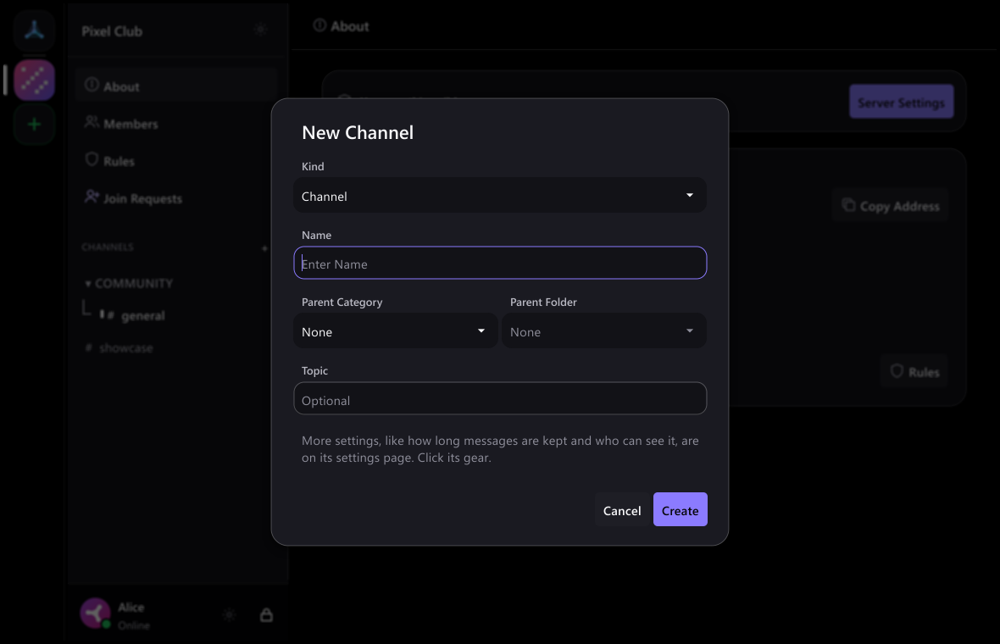
Making a channel.
Parent Category and Parent Folder choose where it goes (None puts a channel at
the top). To change it later, point at it and click its gear: its settings page has
Overview, Messages and Permissions, and Delete at the bottom. Deleting a category
or folder deletes everything inside it. Under Messages:
Setting
What it does
Past Messages
Visible: people who join later can read messages from before they joined. Hidden: they only see new ones.
Keep Messages
How long messages are kept (from 7 days to forever). Older ones are deleted by themselves.
Both settings can be Inherit: a channel then uses the setting of the folder or category it is in.
Who can join, and members
As the owner, open Server Settings with the gear next to the guild's name. The JOINING group
has Joining Conditions, Rules and CAPTCHA.
Joining Conditions and Rules
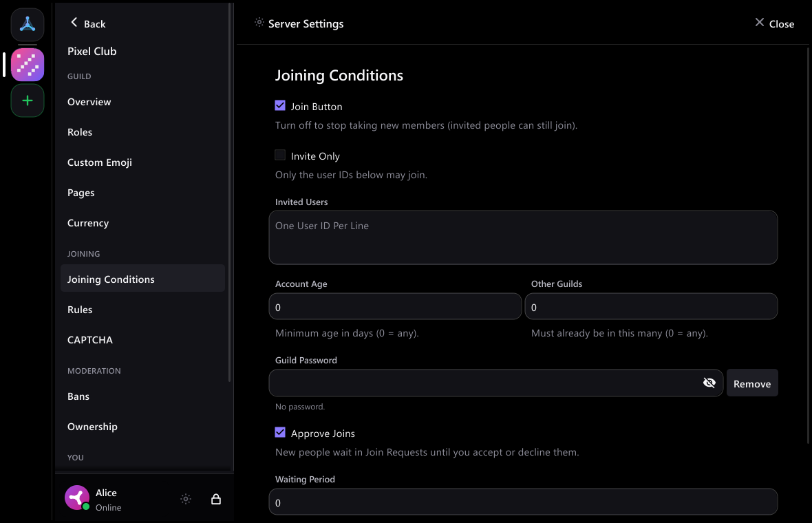
Joining Conditions. The Rules category holds the Rules settings.
Setting
What it does
Join Button
Turn it off to stop taking new members (invited people can still join).
Invite Only
Only the user IDs listed under Invited Users may join (one per line).
Account Age / Other Guilds
Keeps out brand-new bot accounts.
Guild Password
A password to share with members. It is separate from the guild-forge password.
Approve Joins
Newcomers wait in Join Requests until you accept or decline them.
Waiting Period
New members can read, but can't write, react or post in Threads for this many minutes. The owner, Administrators and members with a role don't wait.
Rules
The rules text (Markdown); Must Agree (people scroll to the end and tick I agree), Public Rules (anyone with the address can read them) and Rules Button (a Rules button on the About page).
Join Button (place)
About Page, Rules Page, or After Agreeing to the Rules.
CAPTCHA
Write up to 16 questions; each time, Nexus asks a random few of them (up to 10). Questions
can have a picture, and the answer can be one choice, several choices, a dropdown, or typed text.
Typed answers must match exactly: you choose whether capital letters matter, and you can accept up
to 4 different answers (for example grey and gray).
Each question has a Weightage: Must Always Get Right (getting it wrong fails the
questions), Regular, or Shouldn't Count (asked, but not marked). Always ask this
question. puts it in every quiz; random others fill up the rest.
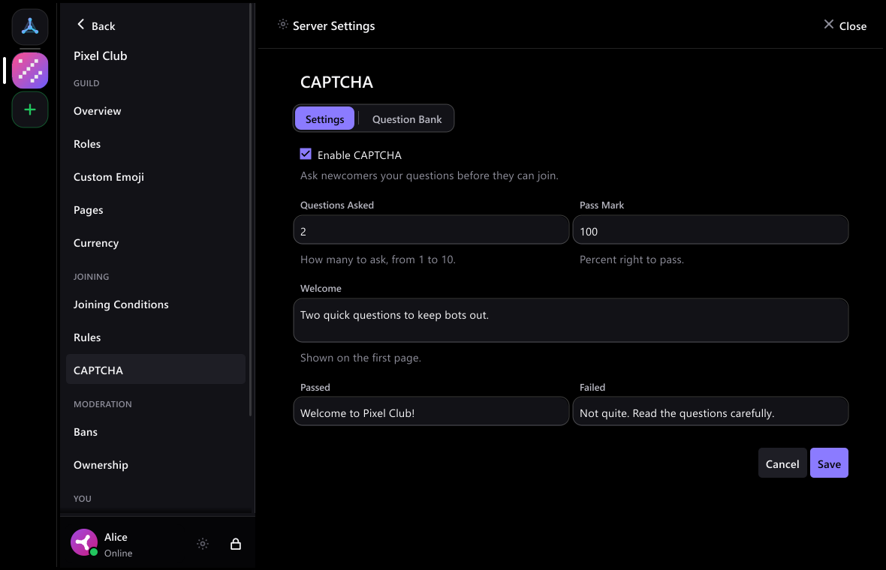
CAPTCHA: the settings, with the Question Bank in the second tab.
Join Requests
When approval is on, the number next to Join Requests in the side bar shows how many people are waiting.
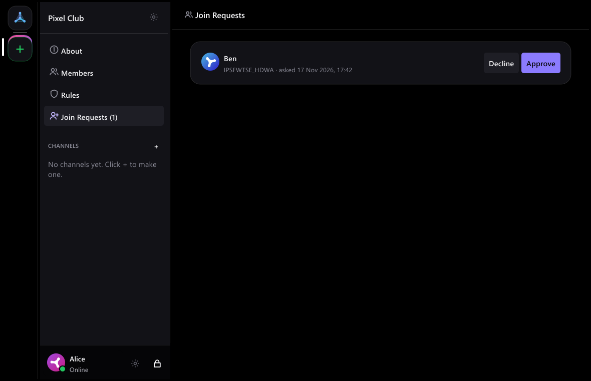
Approve or decline each request.
Kicking and banning
On the Members page, click ⋯ next to a member. Kick removes them (they may join again).
Ban stops that user from ever joining again. Tick Block Address to also block the internet address they
used, but that can block other people who share it, such as family members. Server Settings, Bans,
lists the bans and lets you lift them. Timeout silences someone for a while (1 minute to 1 week) without
removing them: they can still read, but can't write, react or post until it ends. Remove Timeout ends it early.
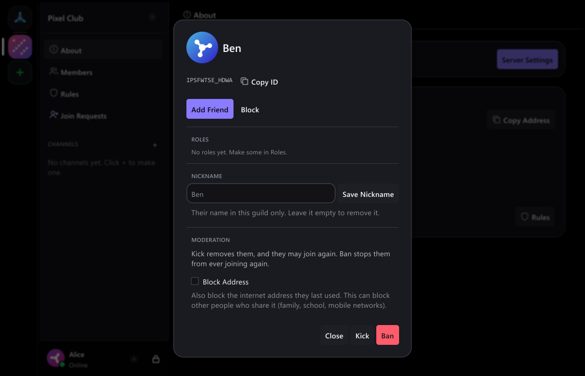
Kick or ban a member.
When someone leaves or is removed, the members' apps make new channel keys by themselves, so
that person can't read new messages.
Roles and permissions
Roles let you share the work of running a guild. Open them in Server Settings, under Roles
(you need the Manage Roles permission; the owner has every permission).
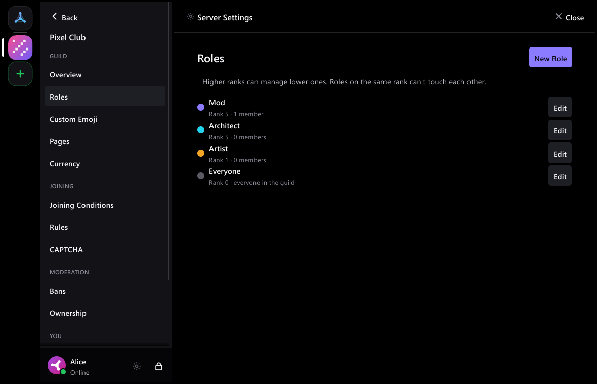
The guild's roles, highest rank first.
Ranks
Every role has a rank. You can only manage people and roles ranked below your own highest
role, so a Mod can't remove an Admin. Roles can share a rank: then neither can touch the other. In the
picture, Mod looks after members and Architect builds channels; both are rank 5, so a Mod
can't kick an Architect, and an Architect can't moderate a Mod. Everyone is the role all members
have; it is always rank 0, and its permissions are everyone's starting point.
Editing a role
Give a role a name, a rank, a colour (names show in the colour of their highest coloured role), and
tick its permissions. Separate Group lists its members as their own group on the Members page;
Mentionable lets anyone @mention it. Purchasable lets members buy it in the Shop (add it there as a
Role item); Accessible To limits buying to some roles, and Mutually Exclusive lists roles it can't be
worn with. You can only give permissions you have yourself.
Editing the Mod role.
Permission
What it allows
Administrator
Every permission. Ranks still apply.
Manage Guild
Overview (name, picture, About text) and Custom Emoji.
Manage Roles
Make and change roles below your own, and give them to people.
Manage Channels
Make, change and delete channels, folders and categories.
Manage Joining
Joining Conditions, Rules and CAPTCHA.
Approve Joins
Join Requests.
Kick / Ban
Remove or ban people ranked below you; Bans.
Timeout
Silence people ranked below you for a while, without removing them.
Joining voice channels, speaking, sharing a screen or camera, moderating voice, and being heard over others.
Giving someone a role
On the Members page, click ⋯ next to a member, tick their roles and click Save Roles.
Ben's roles.
Permissions for one channel
A category, folder or channel can change permissions for a role: click its gear, then Permissions.
For each role, every permission can Inherit, Allow or Deny. The closest rule wins: a
channel's rule beats its folder's, which beats its category's. Inherit Rules makes a channel
or folder use the rules above it instead of its own.
A staff channel: Everyone can't see it; Mods can.
A channel you can't view is hidden from you, and its messages are never sent to your computer.
Its key is only given to those who can read it, and when someone loses access, the members' apps
make a new key.
Ownership and leaving
Transferring ownership
In Server Settings, open Ownership and pick a member. They must accept;
until then, you stay the owner and can cancel the offer.
Leaving a guild
Leave Guild is at the bottom of Server Settings. If you are the owner, Nexus warns you that the guild will have no owner
until its host broadcasts it and someone pairs again. You must type the guild's name to confirm.
Leaving as the owner.
If an owner loses their user, the host can remove them with guild-forge reset_owner=N
(see Hosting a guild).
Security and privacy
What
How it is protected
Your private keys
Encrypted (AES-256-GCM) with a key made from your password (PBKDF2, 600,000 rounds). Never sent anywhere.
App ↔ guild connection
A fresh X25519 key exchange for every connection; everything after it is encrypted with AES-256-GCM.
Guild identity
Each guild signs the connection with its own key. The app remembers each guild's ID and refuses to connect if it ever changes ("This may be an impostor.").
Messages
End-to-end encrypted with a key per channel (AES-256-GCM) and signed by their author (Ed25519). Keys are passed between members in sealed boxes that only the receiver can open; the guild never sees them.
Private messages
Sealed with a key only the two people share (X25519), signed by the sender, passed on by a shared guild that can't read them; kept encrypted on your computer.
Pairing
The one-time password is only accepted during a broadcast, for 5 minutes, with 5 tries.
Export files
Encrypted with the guild password.
Guild files on Linux
Owned by the guild-forge system user; other users can't read them.
The app's window
Drawn by Nexus itself; nothing is served over the network.
Things to know
A lost user password cannot be recovered. Back up your user folder, and remember the password.
A guild's host can see members' IP addresses, like any server.
The host can't read messages, but can see who sent a message, when, and in which channel.
Troubleshooting
Problem
What to try
Check says it could not reach the guild
Is the guild running (guild-forge list)? Are the address and port right? On Windows hosts, allow guild-forge through the firewall (Private networks). If you are testing in a virtual machine, use Bridged networking.
Not broadcasting
On the guild's computer: setup=N broadcast. Broadcasts last one hour.
This guild already has an owner
Only guilds without an owner can be paired. The host can use reset_owner=N.
Guild grey: Active on another computer
Click the guild → Use Here.
Guild grey: Identity changed
The address now answers with a different guild. Make sure you have the right address; this can be an impostor.
🔒 next to a channel
Your app is waiting for the channel's key. It arrives when the owner, or another member who has it, is online.
needs administrator rights on Linux
Put sudo in front of the command.
Port is being used by another program
setup=N port=NUMBER with another port.
A guild does not start
Read its log: <guild folder>/logs/guild.log. On Linux, also sudo journalctl -u 'guild-forge@*' -n 30.
The build says nexus is running
Close the Nexus window and build again.
Reference
guild-forge commands
Command
What it does
Password
create
Create a new guild
sets it
list
Show all guilds and their state
None
setup=N + password, port=, boot=, broadcast
Password, port, start on boot, broadcast
yes
start=N / stop=N
Start or stop guild N
None
OTP
One-time password for the broadcasting guild
None
export=N [FOLDER]
Save guild N as an encrypted .nexus file
yes
import=PATH
Add a guild from a .nexus file or a guild folder
the file's
delete=N
Delete guild N
yes
backup=N
Save a backup of guild N
yes
fall-back=N [NAME]
List backups, or go back to backup NAME
to restore
reset_owner=N
Remove guild N's owner
yes
help
Show the list of commands
None
Paths with spaces go in double quotes: guild-forge import="C:\My Files\GUILD1.nexus".
Where files are kept
What
Windows
Linux
Your user
Documents\Nexus\<name> (or wherever you chose)
The app's settings and log
%APPDATA%\nexus\
~/.config/nexus/
List of guilds (host)
%APPDATA%\guild-forge\registry.json
/var/lib/guild-forge/registry.json
Guild folders (default)
%APPDATA%\guild-forge\guilds\
/var/lib/guild-forge/guilds/
Backups
%APPDATA%\guild-forge\backups\
/var/lib/guild-forge/backups/
Inside a user folder
Alice/
profile.json name, user ID, status, encrypted private keys
contacts.json friends
guilds.json guilds you are in
reads.json the last message you read in each channel
media/ pictures, chat files, cached guild pictures